사용 설명서 · 판 2026-10-13
WY Worklog 사용 설명서
계획한 일정이 끝나면 확인 한 번, 퇴근 전 1분이면 하루 마감.
기준 화면: 2026-10-13 운영 화면 · wy-worklog.com
이 설명서 읽는 법
처음 쓴다면
1장 → 3장 → 4장 순서로 읽어요. 가입하고(1장), 헷갈리는 낱말을 먼저 정리한 뒤(3장), 하루를 한 번 따라 해 보면(4장) 나머지는 필요할 때 찾아 읽으면 돼요.
| 장 | 이럴 때 |
|---|---|
| 1. 시작하기 | 가입·인증·로그인, 휴대폰에 앱 설치 |
| 2. 화면 구성 | 메뉴가 어디 있는지, 명령 팔레트 |
| 3. 헷갈리는 용어 정리 | 업무·일정·기록·확인 대기가 무엇이 다른지 |
| 4. 하루 따라 하기 | 아침부터 하루 마감까지 한 번에 |
| 5. 업무 다루기 | 상태·마감·프로젝트·태그, 보관함 |
| 6. 일정과 캘린더 | 일정 만들기·옮기기·반복 |
| 7. 빠른 입력 | 한 줄로 업무와 일정을 만드는 문법 |
| 8. 시간 기록(옵션) | 타이머, 빈 시간 메우기 |
| 9. 알림과 설정 | 하루 마감 알림, 테마, 되돌리기 |
| 10. 자주 묻는 질문 | 막혔을 때 |
표기
| 이렇게 쓰면 | 뜻 |
|---|---|
| 하루 마감 | 화면에 보이는 버튼·메뉴·제목 이름 그대로예요 |
| 설정 › 일반 | 설정을 누른 뒤 일반을 눌러요 |
14-16 행사장 견적 비교 | 입력창에 이대로 적어요 |
| Ctrl+K (Mac은 ⌘K) | 키보드 단축키. Mac에서는 Ctrl 대신 ⌘ |
| (웹) · (모바일) | 그림이 컴퓨터 화면(폭 1280px)인지 휴대폰 화면(폭 390px)인지 |
예시에 나오는 이름
예시는 모두 가상이에요. 가나다상사 마케팅팀 김우연 대리가 월~금 9시부터 18시까지 일하며, 프로젝트 행사·설문·팀운영과 태그 #보고 #회의 #디자인 #예산 #외부를 써요. 실제 회사·사람과는 관계가 없어요.
화면이 조금 다를 수 있어요
앱은 계속 고쳐지고 있어서 버튼 위치나 문구가 이 설명서와 조금 다를 수 있어요. 기능이 없어진 것이 아니라면 같은 이름의 버튼을 찾아 주세요.
1. 시작하기
이 장을 읽으면 가입하고, 메일로 받은 인증번호를 넣고, 로그인한 뒤 첫 화면에서 무엇을 하면 되는지 알 수 있어요.
이 서비스는 무엇인가요
WY Worklog는 개인 업무 기록 도구예요. 계획한 일정이 끝나면 "했나요?"만 확인하고, 그렇게 확인한 것이 그날의 기록으로 쌓여요. 퇴근 전에는 하루 마감으로 하루를 정리해요.
처음 오면 로그인 화면이 보여요. 계정이 없으면 아래의 회원가입을 눌러 가입 화면으로 가요.
1. 회원가입
가입에 필요한 것은 이메일, 비밀번호, 그리고 동의 항목이에요. 이름이나 소속은 묻지 않아요.
- 이메일에 쓰는 주소를 적어요. 인증번호가 이 주소로 가요.
- 비밀번호를 정해요. 칸 아래의 규칙이 지켜지면 ✓로 바뀌어요.
- 8~64자
- 영문·숫자 포함
- 이메일과 다른 문자열
- 비밀번호 확인에 같은 비밀번호를 한 번 더 적어요.
- 동의 항목을 눌러요. 전체 동의를 누르면 세 개가 한 번에 켜져요.
- [필수] 만 14세 이상입니다
- [필수] 이용약관 동의 (내용 보기로 읽어 볼 수 있어요)
- [필수] 개인정보 수집·이용 동의 (내용 보기로 읽어 볼 수 있어요)
- 회원가입을 눌러요.
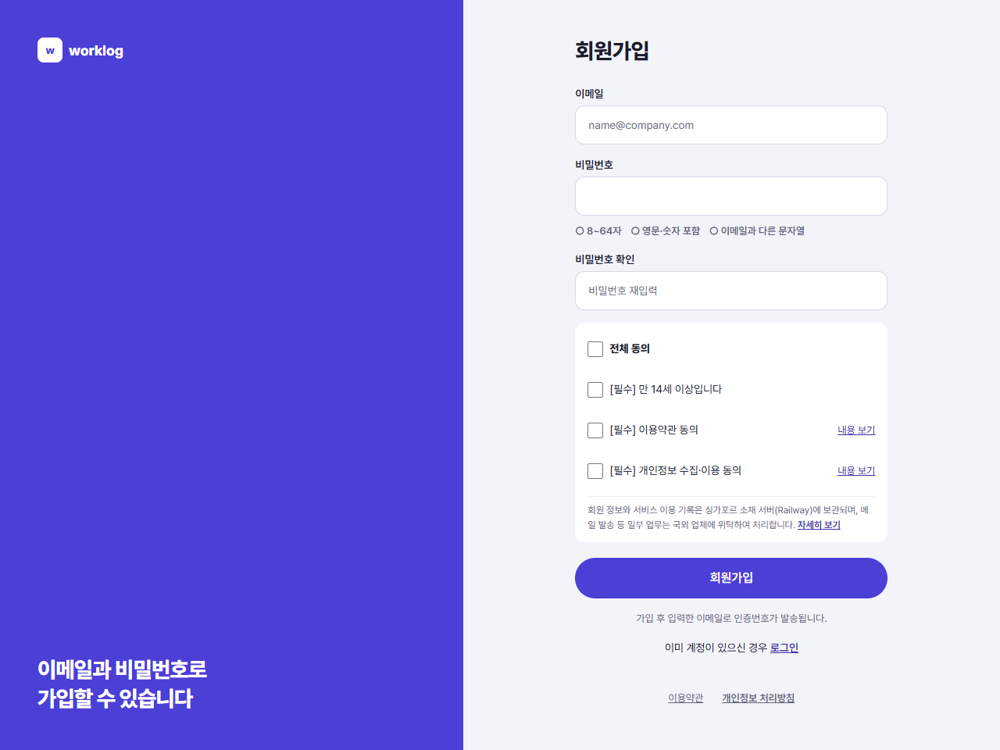
크게 보기, 원본 크기로 새 탭에서 열림 ↗한글 비밀번호는 한 글자가 영문보다 자리를 더 차지해요. 너무 길면 입력하는 동안 바로 알려 줘요.
회원 정보와 이용 기록은 싱가포르에 있는 서버에 보관돼요. 가입 화면 아래에 같은 안내가 있고, 자세히 보기로 처리방침의 해당 부분을 볼 수 있어요.
가입이 안 될 때
- 빠뜨리거나 틀린 칸이 있으면 그 칸 아래에 이유가 보이고, 첫 번째 오류 칸으로 커서가 가요.
- 이미 가입된 이메일입니다라고 나오면 옆의 로그인하기로 가면 돼요.
2. 이메일 인증
회원가입을 누르면 입력한 이메일로 6자리 인증번호가 가고, 가입 화면에서 인증번호를 넣는 단계로 넘어가요. 인증번호를 맞혀야 계정이 만들어져요.
- 메일을 열어 6자리 숫자를 확인해요. 메일이 안 보이면 스팸함도 봐요.
- 가입 화면에 6자리를 입력해요.
- 맞으면 계정이 만들어지고 바로 로그인돼 홈 화면으로 들어가요.
- 인증번호는 10분 동안 쓸 수 있고, 화면에 남은 시간이 보여요.
- 틀리면 "코드가 맞지 않아요 · 남은 시도 n회"로 알려 줘요. 5번 틀리거나 10분이 지나면 입력이 잠겨요. 이때는 새 코드 받기로 새 번호를 받아요.
- 새 코드 받기는 60초 간격으로 누를 수 있어요. 기다리는 동안은 버튼에 남은 초가 보여요.
- 계정 화면에는 인증됨이 보여요.
이메일 주소를 잘못 적었다면 이메일 고치기로 돌아가 주소를 고쳐요. 인증번호를 넣기 전에 창을 닫으면 계정이 만들어지지 않아요. 처음부터 다시 가입해요.
3. 로그인
- 이메일과 비밀번호를 입력하고 로그인을 눌러요.
- 로그인하면 홈 화면으로 가요. 오래 쓰지 않아 다시 로그인하라는 안내가 뜬 경우에는 보던 화면으로 돌아가요.
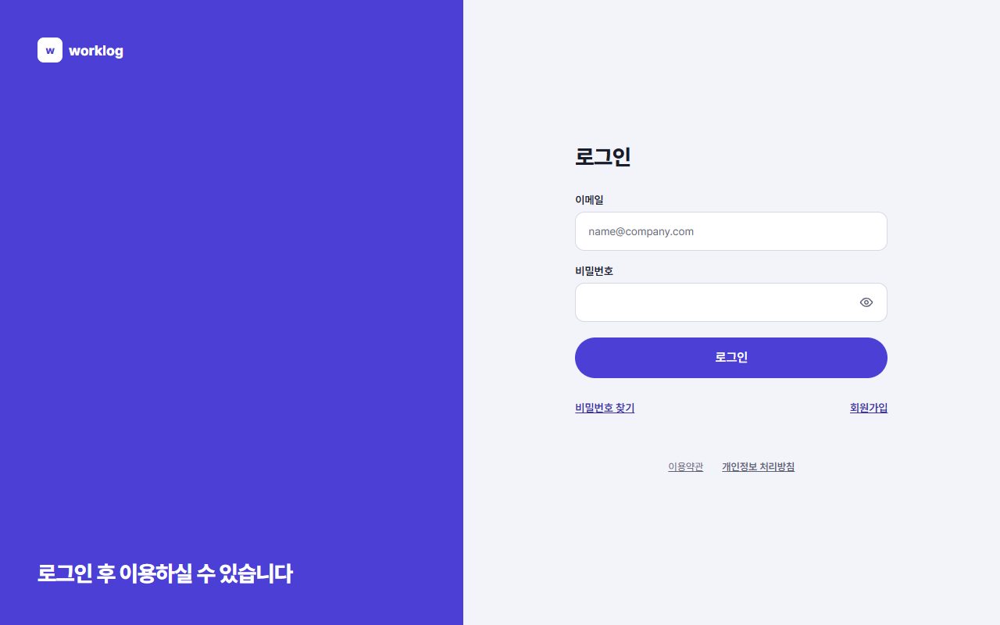
크게 보기, 원본 크기로 새 탭에서 열림 ↗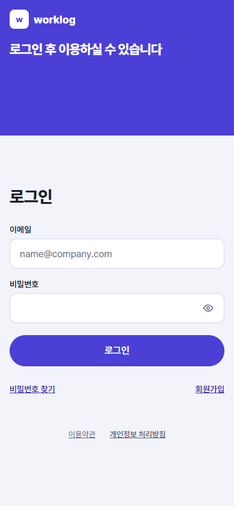
크게 보기, 원본 크기로 새 탭에서 열림 ↗- 이메일이나 비밀번호가 틀리면 "이메일 또는 비밀번호가 맞지 않아요"가 보여요.
- 비밀번호를 10번 잘못 입력하면 15분 동안 로그인할 수 없어요. 남은 시간이 화면에 보여요.
비밀번호를 잊었어요
- 로그인 화면의 비밀번호 찾기를 눌러요.
- 가입한 이메일을 적으면 6자리 인증번호가 메일로 가요.
- 인증번호를 넣고 새 비밀번호를 정해요.
- 새 비밀번호로 다시 로그인해요.
비밀번호를 바꾸면 이메일 인증도 함께 끝나고, 모든 기기에서 로그아웃돼요.
4. 첫 화면
로그인하면 홈이 열려요. 아직 업무가 없으면 "오늘 할 일을 한 줄로 적어 보세요"라는 안내와 예시 몇 줄이 보여요.
- 예시를 누르면 입력창에 채워져요.
- 시간·
@프로젝트·#태그·!우선순위·~마감을 같이 적으면 알아서 나눠 저장해요. 문법은 7장에서 자세히 다뤄요.
화면의 구성(사이드바와 하단 탭)은 2장, 하루를 따라가는 예시는 4장에 있어요.
이 설명서는 언제든 다시 열 수 있어요. 컴퓨터에서는 사이드바 맨 아래 설정 바로 위의 사용 설명서, 휴대폰에서는 더보기 메뉴 맨 아래의 사용 설명서를 누르면 새 탭으로 열려요.
5. 홈 화면에 앱 설치하기
WY Worklog는 휴대폰 홈 화면이나 컴퓨터의 앱으로 설치해서 브라우저 탭 없이 열 수 있어요. 설치하면 알림도 받기 쉬워요.
휴대폰
- 설치 안내 카드는 모바일 홈 화면 아래에 떠요. 앱을 두 번째로 열 때부터 보여요.
- Android: 카드의 설치를 누르면 설치 창이 떠요. 브라우저가 설치를 지원할 때만 카드가 나와요.
- iPhone·iPad (Safari): 카드의 안내를 따라 아래 공유 버튼을 누르고 홈 화면에 추가를 골라요.
- 카드의 ×를 누르면 30일 동안 숨겨져요.
iPhone에서는 홈 화면에 추가한 앱으로 열어야 푸시 알림을 받을 수 있어요(9장).
컴퓨터 (Chrome·Edge)
카드는 나오지 않아요. 설정 › 일반의 앱 설치 줄에서 WY Worklog 앱 설치를 눌러요. 브라우저가 설치 창을 줄 수 있을 때만 이 줄이 보여요.
2. 화면 구성
이 장을 읽으면 어느 화면에서든 원하는 곳으로 가는 길과, 키보드로 빨리 움직이는 명령 팔레트를 알 수 있어요.
큰 화면: 왼쪽 사이드바
컴퓨터처럼 화면이 넓으면 왼쪽에 사이드바가 있어요. 위에서 아래로 이렇게 놓여 있어요.
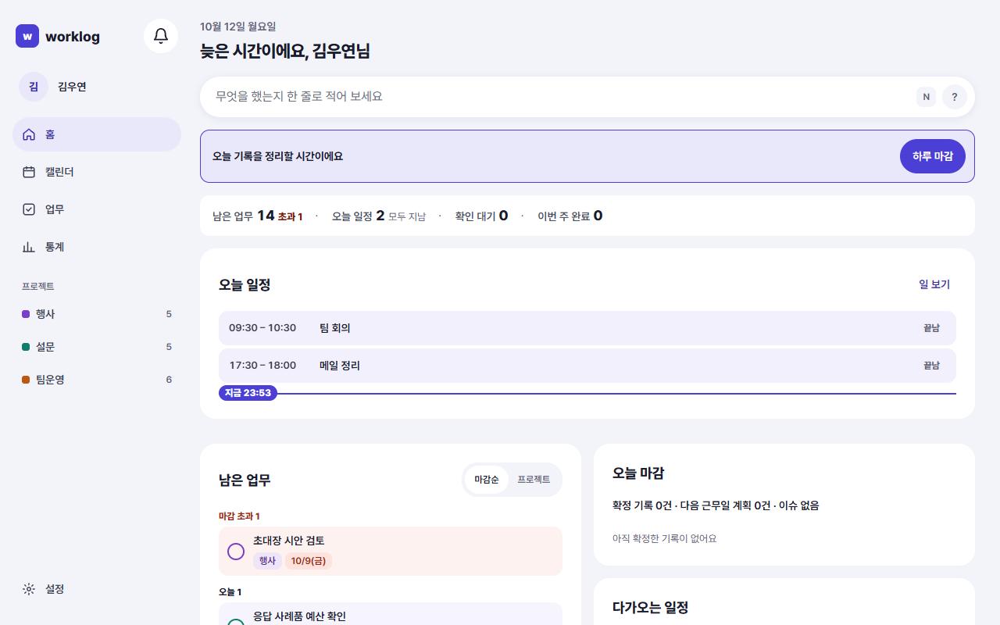
크게 보기, 원본 크기로 새 탭에서 열림 ↗| 자리 | 하는 일 |
|---|---|
| worklog 이름 옆 종 | 알림 센터를 열어요. 안 읽은 알림이 있으면 개수가 보여요(9장) |
| 내 이름 | 누르면 설정 › 계정으로 가요 |
| 홈 | 오늘 할 일과 하루 마감이 모인 첫 화면(4장) |
| 캘린더 | 일정을 잡고 옮기는 곳(6장) |
| 업무 | 업무 목록(5장) |
| 통계 | 기간별로 끝낸 일과 기록을 돌아봐요(4장 끝) |
| 프로젝트 목록 | 프로젝트 이름과 남은 업무 수. 누르면 그 프로젝트의 업무만 거른 업무 목록이 열려요. 제목 옆 +로 이름을 적어 바로 만들고, 목록 아래 프로젝트 관리로 설정 › 프로젝트·태그에 가요(5장) |
| 타이머 | 시간 기록을 켜고 타이머를 돌릴 때만 보여요(8장) |
| 사용 설명서 | 이 설명서를 새 탭으로 열어요 |
| 설정 | 맨 아래에 있어요(9장) |
보관함은 사이드바에 따로 없어요. 업무 목록 맨 아래의 보관함 ›으로 들어가요(5장).
화면이 조금 좁으면(태블릿 정도) 사이드바가 아이콘만 남기고 좁아져요. 이름과 프로젝트 목록은 숨겨지고, 아이콘에 마우스를 올리면 이름이 보여요.
휴대폰: 아래쪽 탭
휴대폰에서는 사이드바 대신 화면 아래에 탭 다섯 칸이 있어요.
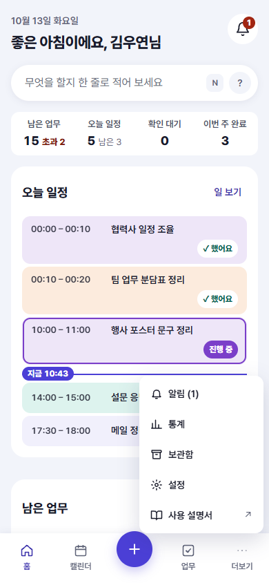
크게 보기, 원본 크기로 새 탭에서 열림 ↗| 탭 | 하는 일 |
|---|---|
| 홈 | 첫 화면 |
| 캘린더 | 처음엔 일 보기로 열려요 |
| 가운데 + | 빠른 기록 시트를 열어요. 한 줄로 업무·일정을 만들고, 남은 확인 대기를 바로 처리해요(4장) |
| 업무 | 업무 목록 |
| 더보기 | 알림 · 통계 · 보관함 · 설정 · 사용 설명서(사용 설명서는 새 탭) |
- 알림 종은 휴대폰에서는 홈 화면 머리 오른쪽에 있어요. 다른 화면에서는 더보기 › 알림으로 가요.
- 빠른 기록 시트, 필터 시트처럼 아래에서 올라오는 창과 더보기 메뉴는 휴대폰의 뒤로 가기로도 닫혀요.
- 타이머를 돌리는 중이면 탭 바로 위에 작은 플레이어가 떠요(8장).
어느 화면에서든 쓰는 단축키
| 키 | 하는 일 |
|---|---|
| Ctrl+K (Mac은 ⌘K) | 명령 팔레트를 열고 닫아요 |
| N | 빠른 입력창으로 가요. 지금 화면에 입력창이 없으면 홈의 입력창으로 가요 |
한 글자 단축키(N, 캘린더의 D·W·M 등)는 글자를 입력하는 칸에 있을 때는 동작하지 않아요. 설정 › 일반에서 끌 수 있어요(9장).
명령 팔레트
Ctrl+K를 누르면 화면 가운데에 검색창 하나가 떠요. 마우스로 메뉴를 찾아가지 않고, 이름을 몇 글자 적어 바로 실행해요. 키보드로 여는 기능이라 휴대폰에서는 쓰지 않아요.
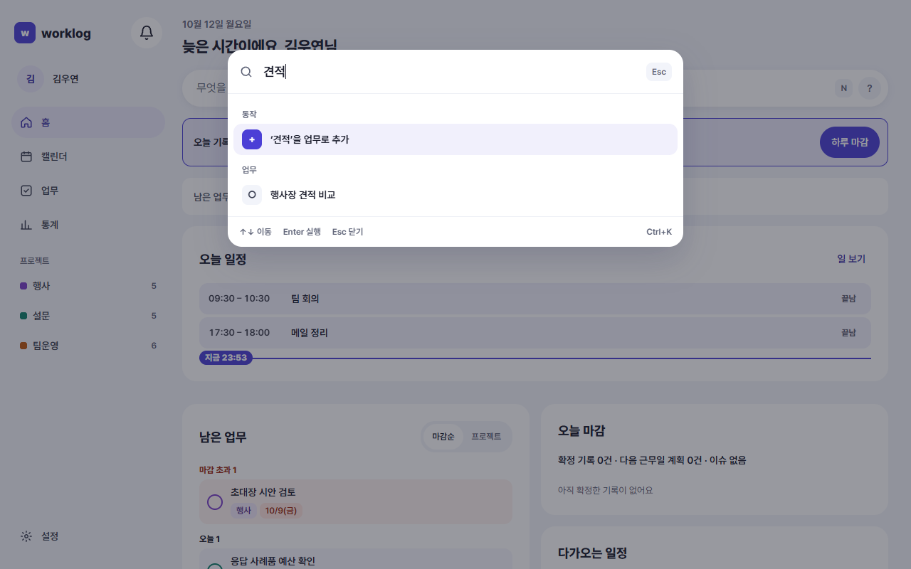
크게 보기, 원본 크기로 새 탭에서 열림 ↗아무것도 적지 않으면 전체 목록이 보여요. 최근 사용한 명령이 맨 위에 와요.
| 묶음 | 명령 |
|---|---|
| 동작 | 업무 추가 · 일정 추가 · 하루 마감 · 빠른 마감 (시간 기록을 켜면 타이머 시작·타이머 정지도) |
| 이동 | 홈 · 캘린더 · 업무 목록 · 통계 · 설정 · 기록 옵션 |
적은 글자에 따라 이런 것도 나와요.
- 업무 찾기: 업무 제목 일부를 적으면 맞는 업무가 업무 묶음에 나와요. 고르면 그 업무의 상세가 열려요. 제목이 정확히 같은 업무가 있으면 맨 앞에 와요.
- 업무로 추가: 맞는 명령이 없으면 "‘적은 글’을 업무로 추가"가 맨 앞에 나와요. 고르면 홈의 빠른 입력창에 그 글이 채워지고, Enter를 누르면 업무가 만들어져요.
- 날짜로 가기:
내일,10/12,다음주 수요일처럼 날짜만 적으면 "그날 캘린더 보기"가 나와요.
↑↓로 고르고 Enter로 실행, Esc로 닫아요.
예: Ctrl+K →
견적→ "행사장 견적 비교" 업무가 보여요. Enter를 누르면 그 업무의 상세가 열려요.
하루 마감과 빠른 마감
- 하루 마감은 홈의 하루 마감 띠와 같은 창을 열어요(4장).
- 빠른 마감은 단계를 건너뛰고 바로 마감해요. 확인 대기는 그대로 두고, 넘길 업무는 처음 골라진 대로 모두 넘기고, 이슈는 비워 둬요. 잘못 마감했으면 마감 뒤 창의 마감 취소로 되돌려요.
3. 헷갈리는 용어 정리
이 장을 읽으면 업무·일정·기록이 각각 무엇이고 서로 어떻게 이어지는지 알 수 있어요.
한 줄로 먼저
- 업무는 해야 할 일이에요. 앱의 중심이에요.
- 일정은 그 일을 언제 할지 캘린더에 잡아 둔 시간이에요.
- 기록은 실제로 한 일과 그 결과예요.
- 업무를 연결한 일정이 끝나면 앱이 확인 대기 기록을 만들어 두고, 내가 "했어요"를 누르면 기록이 돼요.
- 하루 마감은 하루 끝에 확인 대기를 정리하고 다음 근무일로 넘길 업무를 고르는 순서예요.
업무
해야 할 일 하나하나를 업무라고 해요. 업무에는 상태, 우선순위(높음·보통·낮음), 마감일, 프로젝트, 태그, 진행률(10% 단위)을 붙일 수 있어요.
- 언제 쓰나요: "초대장 시안 검토"처럼 해야 할 일이 생기면 바로 업무로 만들어요.
- 어디서 보나요: 사이드바의 업무, 홈의 남은 업무, 캘린더 옆 업무 패널.
- 지우면 어떻게 되나요: 지우지 않고 보관해요. 보관함에서 다시 꺼낼 수 있고, 완전히 지우려면 보관함에서 영구 삭제해요(되돌릴 수 없어요).
'할 일'은 업무의 상태예요
가장 헷갈리는 말이에요. 할 일은 따로 만드는 항목이 아니라 업무의 상태 하나예요. 업무를 새로 만들면 상태가 '할 일'이에요.
| 상태 | 뜻 |
|---|---|
| 할 일 | 아직 시작하지 않았어요 |
| 진행 중 | 하고 있어요 |
| 완료 | 끝냈어요. 끝낸 시각이 남아요 |
| 보류 | 잠시 멈췄어요. 하루 마감 때 다음 근무일로 넘길 후보에서 빠져요 |
화면 몇 곳에서는 '할 일'이 상태가 아니라 "해야 할(또는 한) 일"이라는 보통 말로 쓰여요. 이때는 상태와 상관없어요.
| 화면 | 문구 | 뜻 |
|---|---|---|
| 캘린더 오른쪽 패널 | 할 일 상자 | 패널 이름이에요. 아직 일정을 잡지 않은 업무를 모아 둔 곳이라 '할 일'뿐 아니라 '진행 중'·'보류' 업무도 들어 있어요(완료한 업무는 빠져요). 이 설명서에서는 업무 패널이라고 불러요 |
| 빠른 입력 | "할 일 이름을 적어 주세요" | 업무 제목을 적으라는 뜻이에요 |
| 홈 첫 화면 | "오늘 할 일을 한 줄로 적어 보세요" | 업무를 적어 보라는 뜻이에요 |
| 타이머 시작 창(8장) | 할 일 칸 | 업무를 고르지 않을 때 지금 하는 일을 적는 칸이에요 |
예: "설문 문항 초안"을 만들면 '할 일', 쓰기 시작하면 '진행 중', 끝내고 결과를 적으면 '완료'.
일정
캘린더에 잡아 둔 시간이에요. 시작·끝 시각(또는 종일), 메모, 반복(매일·매주·매월)을 정할 수 있어요.
- 일정에는 업무를 연결할 수도 있고 안 할 수도 있어요. "외부 협력사 미팅"처럼 업무가 없는 일정도 괜찮아요.
- 업무 패널의 업무를 캘린더로 끌어 놓으면 그 업무가 연결된 1시간 일정이 생겨요.
- 일정은 계획이에요. 일정이 있다고 그 일을 한 것으로 치지 않아요. 한 것은 기록으로 남아요.
예: "행사장 견적 비교" 업무를 화요일 10~11시로 끌어 놓으면, 화요일 10~11시에 그 업무가 연결된 일정이 생겨요.
기록
실제로 한 일과 그 결과를 남긴 것이에요. 시간은 적어도 되고 안 적어도 돼요(시간 기록 옵션은 8장).
기록이 생기는 길은 세 가지예요.
- 업무를 완료할 때. 결과 한 줄과 빠른 칩(완료 / 검토 요청 / 진행 중 n%)을 고를 수 있고, 건너뛰어도 '완료' 기록은 남아요.
- 직접 기록을 추가할 때.
- 업무를 연결한 일정이 끝나 생긴 확인 대기를 "했어요"로 확인할 때.
- 어디서 보나요: 캘린더 일 보기의 '이날의 기록', 일정 상세의 기록 상태, 업무 상세의 기록 이력.
확인 대기
업무를 연결한 일정이 끝나면 앱이 "이 일을 했나요?" 하고 기록 후보를 만들어 둬요. 이것이 확인 대기예요. 내가 확인하기 전에는 기록으로 치지 않아요.
- 처리하는 법: 항목마다 했어요 / 수정 / 안 했어요 중 하나를 고르거나, 한꺼번에 n건 모두 했어요.
- 수정은 실제로 한 내용·시간을 고쳐서 기록해요.
- 홈에는 오늘을 포함한 최근 7일 것만 보여요. 더 지난 것은 캘린더 일 보기에서 그날을 열면 처리할 수 있어요.
- 업무를 연결하지 않은 일정, 보관한 업무의 일정에는 생기지 않아요.
예: 매일 17:30 "메일 정리" 일정에 업무를 연결해 두면, 17:30 일정이 끝난 뒤 홈에 확인 대기 1건이 떠요. "했어요"를 누르면 그날 기록이 돼요.
기록 상태와 업무 상태는 달라요
| 무엇의 상태 | 값 | |
|---|---|---|
| 업무 상태 | 해야 할 일 | 할 일 · 진행 중 · 완료 · 보류 |
| 기록 상태 | 일정에서 생긴 기록 | 확인 대기 · 했어요 · 안 했어요 |
일정 하나를 "했어요"로 확인해도 업무가 완료되지는 않아요. 업무가 끝났으면 업무를 따로 완료해요. 직접 쓴 기록은 늘 '했어요'예요.
하루 마감
하루를 정리하는 짧은 순서예요. 홈에서 하루 마감 시각(기본 18:00) 뒤에 뜨는 띠나 알림에서 시작해요.
- 확인 대기: 최근 7일 확인 대기를 처리해요. 없으면 이 단계는 건너뛰어요.
- 다음 근무일 계획: 다음 근무일로 넘길 업무를 골라요. 처음엔 모두 골라져 있어요. 다음 근무일이 다음 주이면(예: 금요일) 이름이 다음 주 계획으로 바뀌어요.
- 이슈 및 특이사항(선택): 있으면 한 줄 적고 오늘 마감을 눌러요(지난 날을 마감할 때는 마감).
- 넘길 후보는 아직 끝내지 않은 업무(할 일·진행 중) 가운데 오늘 기록이 있거나, 마감이 다음 근무일까지이거나, 진행 중인 업무예요.
- 넘겨도 업무의 상태·마감일은 바뀌지 않아요. 넘긴 계획을 다시 보거나 고치는 화면은 아직 없어요.
- 근무일이 아닌 날에도 마감할 수 있고, 이때도 다음 근무일로 넘어가요.
- 통계의 '마감한 날'은 하루 마감을 한 날의 수예요.
헷갈리는 짝 한눈에
| 헷갈리는 짝 | 차이 |
|---|---|
| 할 일 ↔ 업무 | 할 일은 업무의 상태 하나. 만드는 것은 늘 업무 |
| 일정 ↔ 기록 | 일정은 하려고 잡은 시간(계획), 기록은 실제로 한 일 |
| 확인 대기 ↔ 했어요 | 확인 대기는 앱이 만든 후보, 내가 확인해야 '했어요' 기록이 됨 |
| 일정 '했어요' ↔ 업무 '완료' | 일정 한 번을 했다는 것과 업무가 끝났다는 것은 따로 |
| 보관 ↔ 영구 삭제 | 보관은 목록에서 치우는 것(보관함에서 되살림). 영구 삭제는 보관함에서만 하고 되돌릴 수 없음 |
| 하루 마감 ↔ 업무 완료 | 하루 마감은 하루를 정리하는 것. 업무를 완료 처리하지 않음 |
4. 하루 따라 하기
이 장을 읽으면 아침에 할 일을 적는 것부터 저녁에 하루를 마감하는 것까지, 하루 동안 앱을 쓰는 순서를 따라 할 수 있어요.
가나다상사 마케팅팀 김우연 대리의 화요일을 따라가요. 근무 시간은 9시부터 18시, 하루 마감 시각은 기본값 18:00이에요. 시간 기록 옵션은 꺼 둔 상태예요(켠 하루는 이 장 끝과 8장).
| 시각 | 하는 일 | 쓰는 화면 |
|---|---|---|
| 09:00 | 오늘 볼 것 확인, 할 일 적기 | 홈 |
| 09:20 | 오늘 시간표 짜기 | 캘린더 |
| 낮 | 끝낸 업무 완료, 계획에 없던 일 기록 | 업무·캘린더·휴대폰 |
| 일정이 끝날 때마다 | 확인 대기 처리 | 홈 |
| 18:00 | 하루 마감 | 홈 |
| 금요일 오후 | 한 주 돌아보기 | 통계 |
1. 아침: 홈에서 오늘 보기
로그인하면 홈이 열려요. 맨 위에 날짜와 인사, 그 아래 큰 입력창이 있어요.
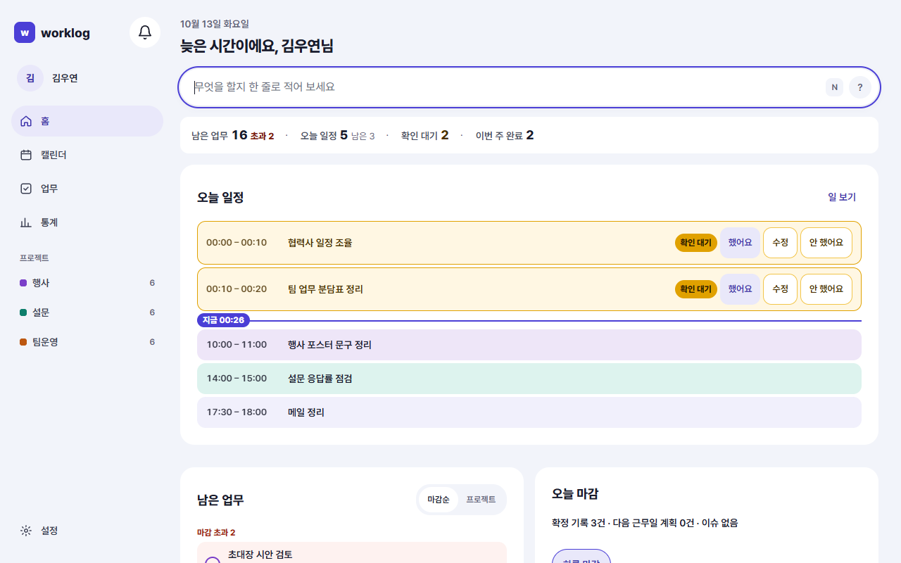
크게 보기, 원본 크기로 새 탭에서 열림 ↗위에서 아래로 이렇게 놓여 있어요.
| 자리 | 보이는 것 |
|---|---|
| 빠른 입력창 | "무엇을 할지 한 줄로 적어 보세요". 하루 마감 시각이 지나면 "무엇을 했는지 한 줄로 적어 보세요"로 바뀌어요 |
| 요약 한 줄 | 남은 업무(마감 지난 것은 '초과 n') · 오늘 일정(남은 n) · 확인 대기 · 이번 주 완료. 누르면 그 목록으로 가요 |
| 오늘 일정 | 오늘 잡힌 일정이 시간순으로. 지금 하는 일정에는 '진행 중'이 붙어요 |
| 남은 업무 | 마감순 또는 프로젝트로 묶어 10개까지. 동그란 체크로 바로 완료해요 |
| 오른쪽 열 | 오늘 마감 카드 · 다가오는 일정(내일부터 7일) · 이번 주 마감(요일마다 마감함·마감 전) |
휴대폰에서는 같은 내용이 한 줄로 이어져요.
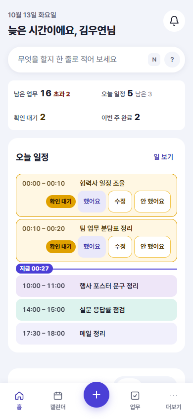
크게 보기, 원본 크기로 새 탭에서 열림 ↗요약 줄의 확인 대기에 숫자가 있으면, 어제까지 끝난 일정 중 아직 확인하지 않은 것이 있다는 뜻이에요. 먼저 눌러서 정리해요(아래 4절).
오늘 할 일 적기
빠른 입력창에 한 줄씩 적고 Enter를 눌러요(문법은 7장).
주간 보고 정리 @팀운영 #보고 ~금
14-16 행사장 견적 비교 @행사 #예산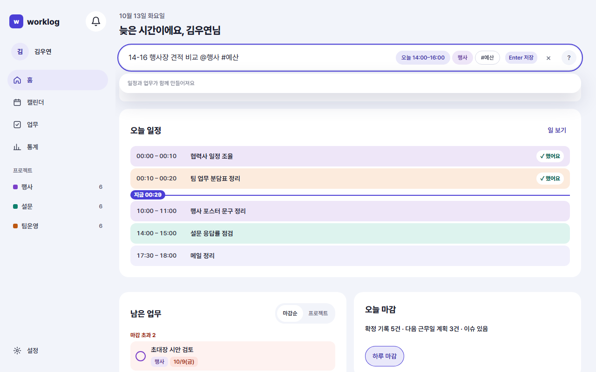
크게 보기, 원본 크기로 새 탭에서 열림 ↗- 첫 줄은 시간이 없어서 업무만 생겨요. 마감은 이번 주 금요일이에요.
- 둘째 줄은 시간이 있어서 업무와 오늘 14:00–16:00 일정이 함께 생기고 서로 연결돼요.
적는 동안 입력창 아래에 "업무가 만들어져요" 또는 "일정과 업무가 함께 만들어져요"가 보여서, 무엇이 생길지 미리 알 수 있어요.
2. 계획: 캘린더에서 시간표 짜기
사이드바의 캘린더를 열고 일 보기(단축키 D)로 오늘을 봐요. 오른쪽에 업무 패널(맨 위 이름 '할 일 상자', 3장)이 있어요. 아직 일정을 잡지 않은 업무가 마감이 가까운 순서로 보여요.
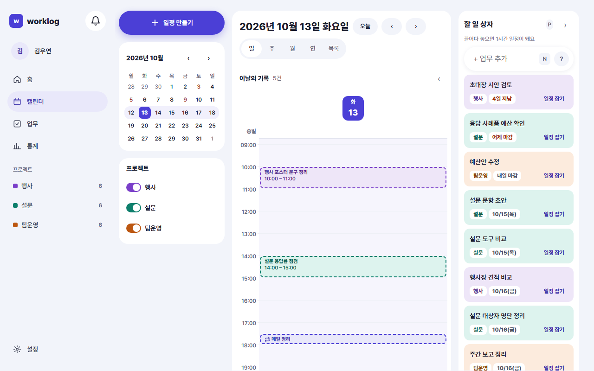
크게 보기, 원본 크기로 새 탭에서 열림 ↗- 업무 패널의 "초대장 시안 검토"를 끌어서 10시 줄에 놓아요. 10:00–11:00에 그 업무가 연결된 일정이 생겨요.
- 16시 빈 칸을 눌러 빠른 만들기 창을 열고
외부 협력사 미팅이라고 적은 뒤 저장을 눌러요. 업무가 없는 일정이에요.
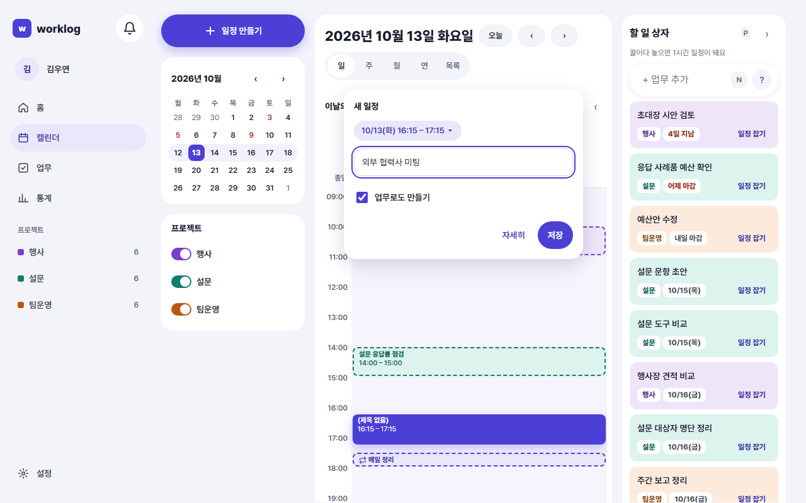
크게 보기, 원본 크기로 새 탭에서 열림 ↗반복 일정 "매일 17:30 메일 정리"는 미리 만들어 두었어요(반복 만들기는 6장).
이제 오늘 시간표는 이래요.
| 시간 | 일정 | 연결 업무 | 끝나면 확인 대기가 생기나요 |
|---|---|---|---|
| 10:00–11:00 | 초대장 시안 검토 | 있음 | 생겨요 |
| 14:00–16:00 | 행사장 견적 비교 | 있음 | 생겨요 |
| 16:00–17:00 | 외부 협력사 미팅 | 없음 | 안 생겨요 |
| 17:30–18:00 | 메일 정리(매일 반복) | 있음 | 생겨요 |
일정은 계획이에요. 일정을 잡았다고 업무가 진행 중이나 완료로 바뀌지는 않아요.
3. 일하는 중: 완료하고 기록하기
업무를 끝냈을 때
어제부터 하던 "설문 문항 초안"을 끝냈어요. 홈이나 업무 목록에서 그 업무의 동그란 체크를 눌러요.
화면 아래에 결과 한 줄 창이 떠요.
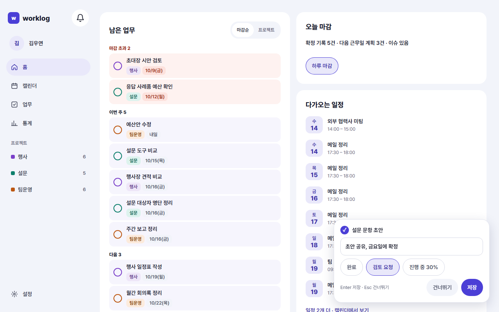
크게 보기, 원본 크기로 새 탭에서 열림 ↗- 결과를 한 줄 적어요. 예:
초안 공유, 금요일에 확정 - 칩을 골라요: 완료 · 검토 요청 · 진행 중(진행 중을 고르면 진행률도 골라요). 이번엔 검토 요청.
- 저장(Enter)을 눌러요.
결과를 적기 귀찮으면 건너뛰기(Esc)를 눌러요. 결과 없이 '완료' 기록이 남아요. 업무를 완료하면 어느 쪽이든 오늘 기록이 하나 생겨요.
계획에 없던 일을 했을 때
오전에 협력사에서 전화가 와서 30분 동안 일정 조정을 했어요. 일정에 없던 일이라 확인 대기가 생기지 않아요. 직접 기록을 남겨요.
- 캘린더 일 보기 오른쪽 이날의 기록에서 기록 추가를 눌러요.
- 한 일에
협력사 일정 조정 통화를 적어요. - 필요하면 업무를 연결하고, 결과 한 줄과 칩을 골라요. 칩은 없음 · 완료 · 검토 요청 · 진행 중이에요. 결과를 정할 게 없으면 없음으로 둬요.
- 날짜가 오늘인지 보고 저장을 눌러요. "기록을 남겼어요"가 떠요.
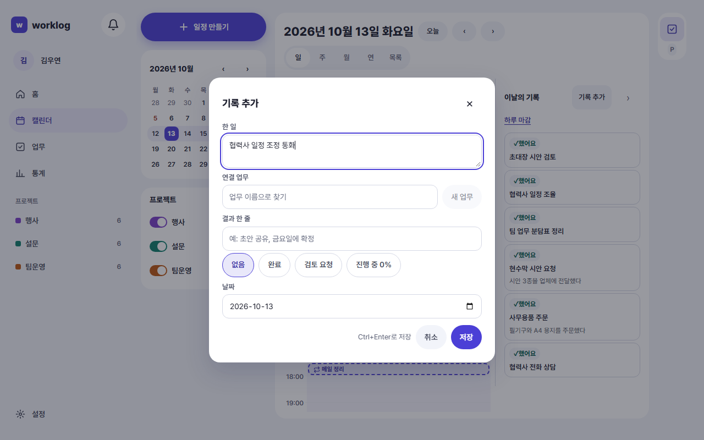
크게 보기, 원본 크기로 새 탭에서 열림 ↗직접 남긴 기록은 처음부터 '했어요' 기록이에요. 확인할 필요가 없어요.
휴대폰에서
밖에 있을 때는 하단 탭 가운데 +를 눌러 빠른 기록 시트를 열어요.
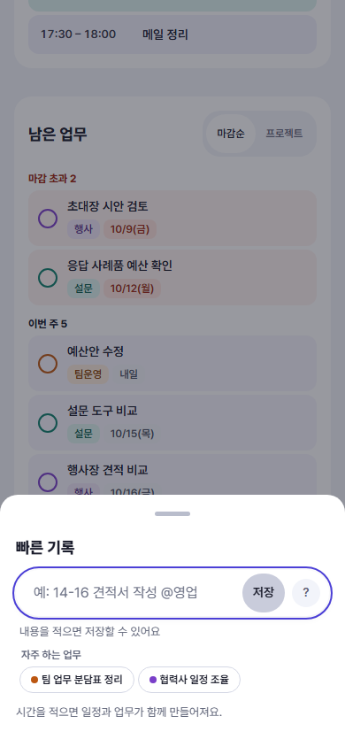
크게 보기, 원본 크기로 새 탭에서 열림 ↗- 한 줄 입력에 홈과 같은 문법으로 적고 저장을 눌러요.
- 확인 대기가 있으면 시트 안에 첫 건이 보여요. 했어요로 바로 처리하거나, n건 더 보기로 전체 목록을 열어요.
4. 일정이 끝나면: 확인 대기 처리
10:00–11:00 "초대장 시안 검토" 일정이 끝나면, 앱이 "이 일을 했나요?" 하고 확인 대기를 만들어 둬요(3장). 아직 기록은 아니에요.
홈의 오늘 일정에서 끝난 일정 옆에 '확인 대기'와 버튼 세 개가 보여요. 끝난 직후 잠깐은 '끝남'으로 보이다가 확인 대기로 바뀌어요.
| 버튼 | 이럴 때 | 결과 |
|---|---|---|
| 했어요 | 계획대로 했어요 | 계획한 시각대로 기록이 돼요 |
| 수정 | 하긴 했는데 내용이나 시간이 달랐어요 | "확인 대기 수정" 창에서 고쳐 저장하면 '했어요' 기록이 돼요 |
| 안 했어요 | 못 했어요 | '안 했어요'로 표시돼요. 실적에는 들어가지 않아요 |
확인 대기가 여러 건이면 요약 줄의 확인 대기를 눌러 한 창에서 처리해요.
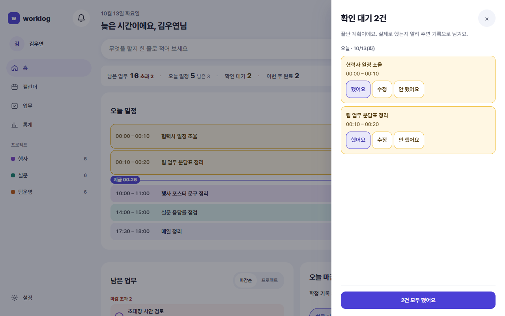
크게 보기, 원본 크기로 새 탭에서 열림 ↗- 창 제목은 "확인 대기 n건"이고, 날짜별(오늘·어제…)로 묶여 있어요.
- 항목마다 했어요 · 수정 · 안 했어요, 아래에는 한꺼번에 처리하는 n건 모두 했어요가 있어요.
- 처리하면 화면 아래에 "1건을 했어요로 기록했어요" 같은 알림과 되돌리기가 잠깐 떠요.
- 다 처리하면 창이 저절로 닫혀요.
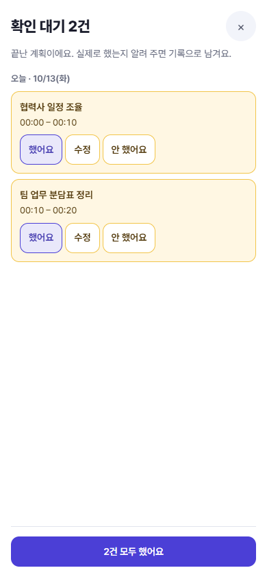
크게 보기, 원본 크기로 새 탭에서 열림 ↗14:00–16:00 견적 비교는 했지만 업체를 하나로 정하지는 못했어요. 이럴 땐 수정을 눌러 결과 한 줄에
두 곳으로 좁힘을 적고 칩을 진행 중으로 골라 저장해요. 시간까지 고치는 칸은 시간 기록 옵션을 켰을 때만 보여요(8장).
- 홈에는 오늘을 포함한 최근 7일의 확인 대기만 보여요. 더 지난 것은 캘린더 일 보기에서 그날을 열어 처리해요.
- 지금 진행 중인 일정의 확인 대기는 일정이 끝난 뒤에 나타나요.
5. 18:00: 하루 마감
하루 마감 시각(18:00)이 되면 홈 맨 위에 띠가 떠요.
오늘 기록을 정리할 시간이에요 · 확인 대기 n건 · [하루 마감]
하루 마감을 누르면 창이 열려요. 다른 길도 있어요.
- 하루 마감 알림을 켜 두었다면(9장) 알림을 눌러도 돼요. 알림 센터에서 누르든 휴대폰·PC 푸시를 누르든, 홈으로 가서 그날의 하루 마감 창이 열려요.
- 18시 전에는 오른쪽 오늘 마감 카드의 하루 마감 버튼으로 열어요.
- 명령 팔레트(Ctrl+K)의 하루 마감(2장). 같은 곳의 빠른 마감은 단계를 건너뛰고 바로 마감해요(확인 대기는 그대로 두고, 넘길 업무는 처음 골라진 대로, 이슈는 비운 채).
창은 세 단계예요. 제목에 "하루 마감 1/3"처럼 단계가 보여요. 확인 대기가 없으면 1단계를 건너뛰고 두 단계가 돼요.
1단계: 확인 대기
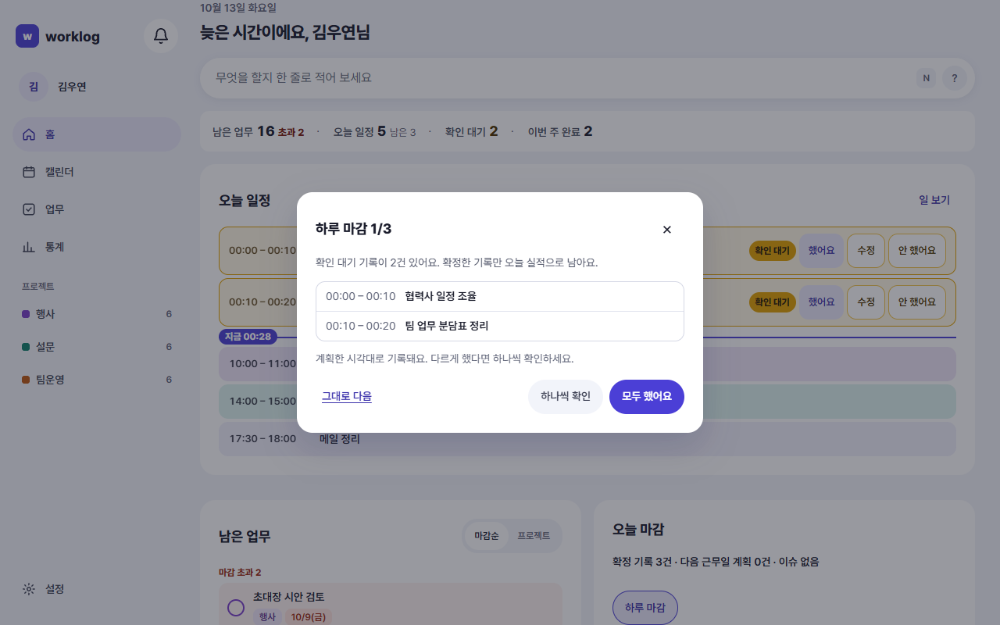
크게 보기, 원본 크기로 새 탭에서 열림 ↗"확인 대기 기록이 n건 있어요. 확정한 기록만 오늘 실적으로 남아요."라는 안내와 남은 확인 대기 이름이 5개까지 보여요(더 있으면 "외 n건"). 목록 아래에는 "계획한 시각대로 기록돼요. 다르게 했다면 하나씩 확인하세요."라는 줄이 있어요. 마감하는 날까지의 확인 대기만 나와요. 오늘을 마감하면 오늘과 그 전 최근 7일 것이고, 다른 날 것에는 날짜가 붙어요. 지난 날을 마감할 때는 그날까지의 것만 나와서, 그 뒤 날짜의 기록은 확정되지 않아요.
| 버튼 | 하는 일 |
|---|---|
| 모두 했어요 | 위에 나온 확인 대기를 계획한 시각대로 모두 '했어요'로 기록하고 다음 단계로 가요. 5초 동안 되돌릴 수 있어요(그 안에 마감까지 하면 되돌리기는 사라지고, 마감 취소로 돌려요) |
| 하나씩 확인 | 4절의 확인 대기 창을 열어 하나씩 처리해요. 다 처리하면 다음 단계로 가요 |
| 그대로 다음 | 처리하지 않고 넘어가요. 남은 건 확인 대기로 그대로 남고, 오늘 실적에 들어가지 않아요 |
2단계: 다음 근무일 계획
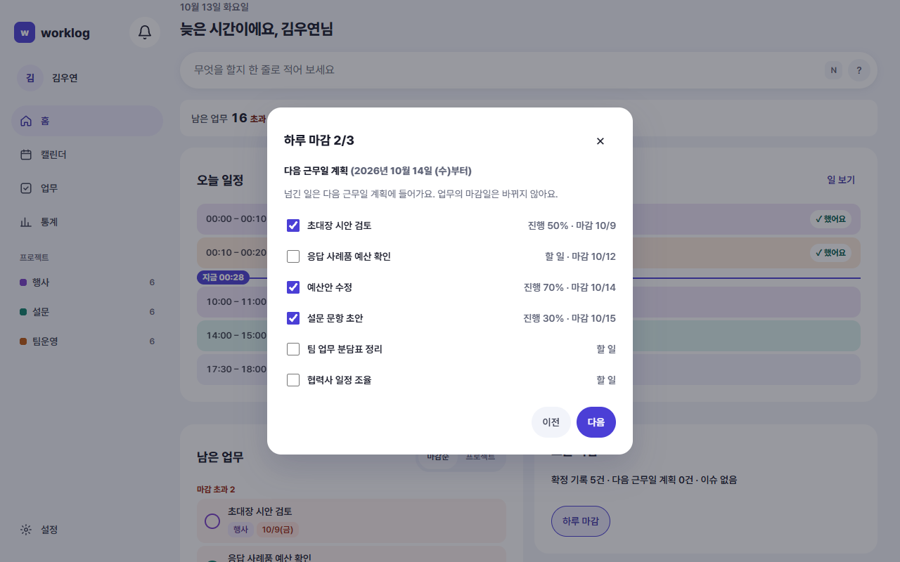
크게 보기, 원본 크기로 새 탭에서 열림 ↗다음 근무일로 넘길 업무를 골라요. 처음엔 모두 골라져 있으니, 넘기지 않을 것만 체크를 풀어요.
- 목록에 나오는 업무: 아직 끝내지 않은 업무(할 일·진행 중) 가운데 오늘 기록이 있거나, 마감이 다음 근무일까지이거나, 진행 중인 업무예요. 보류한 업무는 나오지 않아요.
- 줄마다 상태(할 일 / 진행 n%)와 마감일이 보여요.
- 넘겨도 업무의 상태와 마감일은 바뀌지 않아요.
- 금요일처럼 다음 근무일이 다음 주이면 단계 이름이 다음 주 계획이 돼요.
- 넘길 업무가 없으면 "넘길 업무가 없어요"가 보여요.
다음을 눌러요. 앞 단계로 돌아가려면 이전(확인 대기가 없어 1단계를 건너뛰었으면 이 단계에는 이전이 없어요).
3단계: 이슈 및 특이사항
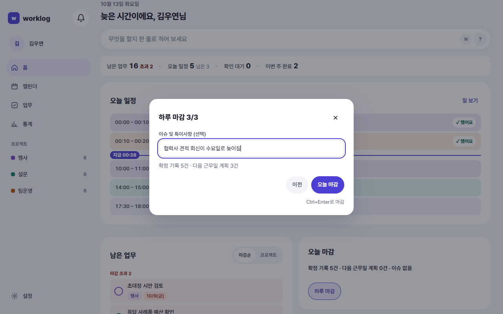
크게 보기, 원본 크기로 새 탭에서 열림 ↗- 오늘 남길 이슈가 있으면 한 줄 적어요. 비워도 돼요. 예:
협력사 견적 회신이 수요일로 늦어짐 - 아래 요약 "확정 기록 n건 · 다음 근무일 계획 n건"을 확인해요.
- 오늘 마감을 눌러요(Ctrl+Enter, Mac은 ⌘Enter). 지난 날을 마감할 때는 버튼 이름이 마감이에요.
마감한 뒤
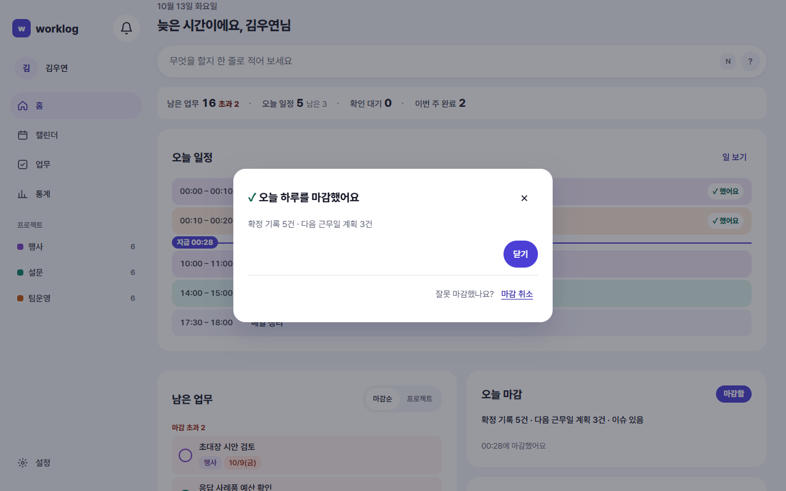
크게 보기, 원본 크기로 새 탭에서 열림 ↗- 창에 "✓ 오늘 하루를 마감했어요"와 요약이 보여요. 닫기를 눌러요.
- 홈의 띠가 "✓ 오늘 하루를 마감했어요 · 18:05 마감 · 다음 근무일 계획 3건"처럼 바뀌고, 오늘 마감 카드에 '마감함'이 붙어요.
- 잘못 마감했으면 창 아래 잘못 마감했나요? 마감 취소를 눌러요. "마감을 취소할까요? 넘긴 계획은 그대로예요."에서 마감 취소를 고르면 마감 전으로 돌아가고, 다시 마감으로 처음부터 다시 할 수 있어요.
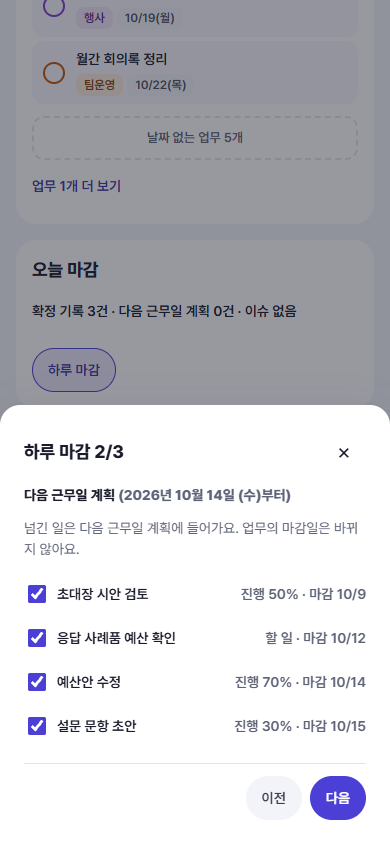
크게 보기, 원본 크기로 새 탭에서 열림 ↗넘긴 계획을 나중에 다시 보거나 고치는 화면은 아직 없어요. 넘기기 전에 2단계에서 골라 주세요.
이럴 땐 이렇게
- 마감을 깜빡했어요: 캘린더 일 보기에서 그날을 열고 이날의 기록의 하루 마감을 눌러요. 지난 날도 마감할 수 있어요(이 버튼은 오늘과 지난 날에만 있어요).
- 이미 마감한 날을 다시 열었어요: "오늘은 이미 마감했어요"(지난 날이면 "10월 6일은 …")가 보여요. 바꾸려면 같은 창의 마감 취소를 누른 뒤 다시 마감해요.
- 근무일이 아닌 날: 주말에 일했다면 그날도 마감할 수 있어요. 홈의 마감 띠는 그날 기록이 있을 때만 떠요. 넘긴 업무는 다음 근무일로 가요.
6. 돌아보기
그날의 기록
캘린더 일 보기 오른쪽 이날의 기록에 그날 남긴 기록이 모여요. 확인 대기 기록은 "계획 14:00–16:00"처럼 계획 시간이 함께 보여요. 했어요 기록은 시작 시각이, 안 했어요 기록은 시각 없이 보여요. 항목을 누르면 고칠 수 있어요. 접어 두면 "3건 · 대기 1 · 마감함"처럼 요약만 보여요.
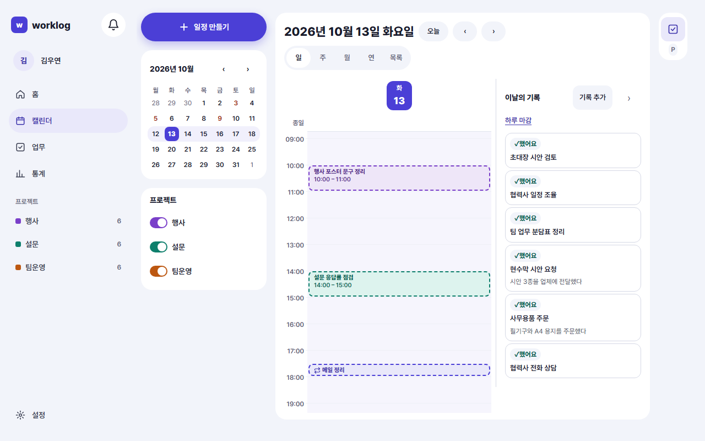
크게 보기, 원본 크기로 새 탭에서 열림 ↗한 업무에 쌓인 기록은 업무 상세의 기록 이력에서 봐요(5장).
통계
사이드바의 통계(휴대폰은 더보기 › 통계)에서 기간을 골라 돌아봐요.
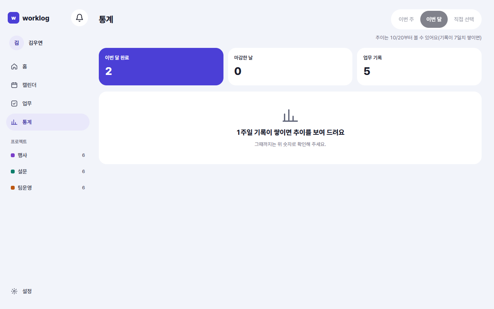
크게 보기, 원본 크기로 새 탭에서 열림 ↗- 기간: 이번 주 · 이번 달 · 직접 선택.
- 맨 위 요약: 이번 주 완료(고른 기간에 끝낸 업무 수. 기간에 따라 '이번 달 완료'·'기간 안 완료') · 마감한 날(하루 마감을 한 날 수) · 업무 기록(기록 수).
- 그 아래 주별(또는 달별) 완료 업무 그래프와 프로젝트별 완료.
- 추이 그래프와 기간 고르기는 첫 기록을 남기고 7일이 지나야 쓸 수 있어요. 그 전에는 위 숫자로 봐요.
- 시간 기록을 켜면 소요시간 비중과 '주간 회고 · 예상 대비 실제'가 더 보여요(8장).
7. (옵션) 시간 기록을 켠 하루
설정 › 기록 옵션에서 시간 기록을 켜면 같은 하루가 조금 달라져요. 자세한 것은 8장이에요.
- 업무를 시작할 때 ▶로 타이머를 켜고, 끝나면 정지해요. 잰 시간이 기록이 돼요.
- 일정에서 타이머를 켜면 그 일정의 확인 대기는 따로 생기지 않아요.
- 홈의 오늘 일정이 계획과 실제 두 열로 바뀌고, 기록이 없는 시간은 점선 빈 시간으로 보여요. 눌러서 한 번에 채워요.
5. 업무 다루기
이 장을 읽으면 업무를 만들고, 훑어보고, 고치고, 치우는 방법을 알 수 있어요.
업무 목록 한눈에
사이드바(모바일은 하단 탭)의 업무를 누르면 업무 목록이 열려요. 앞으로 해야 할 일이 마감이 가까운 순서로 모여 있어요.
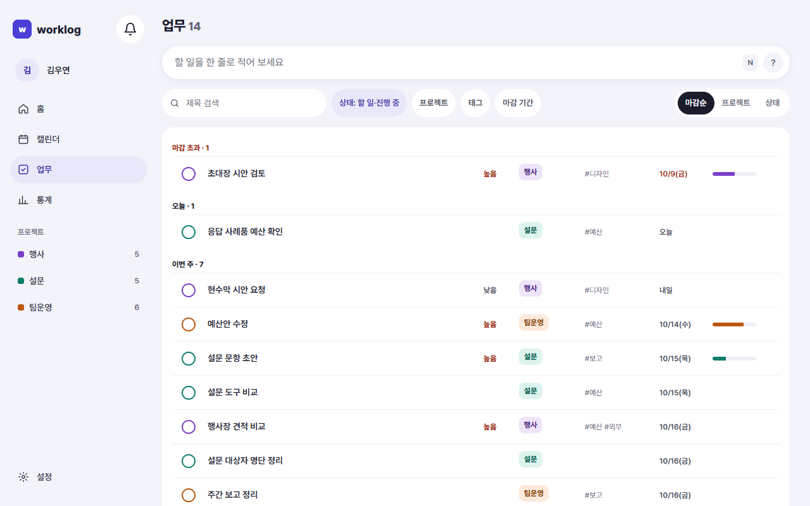
크게 보기, 원본 크기로 새 탭에서 열림 ↗위에서 아래로 이렇게 이어져요.
- 입력창 — 한 줄로 적고 Enter를 누르면 업무가 만들어져요(적는 법은 7장).
- 검색·필터·묶기 — 제목 검색, 상태·프로젝트·태그·마감 기간 필터, 마감순·프로젝트·상태 묶기.
- 목록 — 업무 한 줄이 하나의 업무예요.
처음 열면 할 일과 진행 중 업무만 보여요. 완료한 업무는 목록 맨 아래의 "완료 n개 (최근 7일) 펼치기"에, 보류한 업무는 상태 필터에서 '보류'를 켜야 보여요.
한 줄에 보이는 것
| 칸 | 뜻 |
|---|---|
| 동그란 체크 | 누르면 업무를 완료해요 |
| 제목 | 누르면 업무 상세가 열려요 |
| 우선순위 | '높음'과 '낮음'만 적혀요. '보통'은 비워 둬서 눈에 띄는 것만 보여요 |
| 프로젝트 | 프로젝트 이름 칩(프로젝트마다 색이 달라요) |
| 태그 | #보고 #회의처럼 이어서 적혀요 |
| 마감 | 오늘·내일 또는 날짜. 마감이 지났으면 붉은 글씨예요 |
| 진행률 | 막대로 보여요. 0%면 비워 둬요 |
| ◷ | 이 업무가 캘린더 일정에 놓여 있어요 |
화면이 좁으면(태블릿·모바일) 체크·제목·프로젝트·마감만 남아요. 우선순위가 '높음'이면 제목 앞에 작은 점이 붙어 알려 줘요.
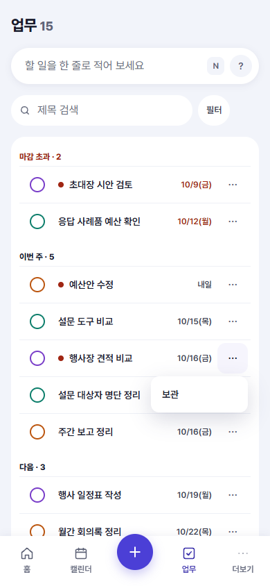
크게 보기, 원본 크기로 새 탭에서 열림 ↗묶어 보기
목록 위의 마감순 · 프로젝트 · 상태 버튼으로 묶는 기준을 바꿔요.
| 묶기 | 이렇게 나뉘어요 |
|---|---|
| 마감순 | 마감 초과 → 오늘 → 이번 주 → 다음 → 날짜 없음 |
| 프로젝트 | 프로젝트별, 프로젝트가 없는 업무는 맨 뒤 |
| 상태 | 할 일 → 진행 중 → 완료 → 보류 |
예: 가나다상사 마케팅팀 대리가 월요일 아침에 업무를 열면 '마감 초과'에 "주간 보고 정리"가 붉게 보이고, 그 아래 '오늘'에 "초대장 시안 검토"가 있어요.
업무 만들기
입력창에 한 줄로 적고 Enter를 눌러요. 제목만 적어도 되고, 프로젝트·태그·우선순위·마감을 함께 적어도 돼요.
초대장 시안 검토 @행사 #디자인 !높음 ~금만들면 아래에 "업무 1개를 추가했어요" 알림이 뜨고 새 업무가 목록 가운데로 와서 잠깐 강조돼요. 실수했다면 알림의 되돌리기를 눌러요.
- 새 업무는 늘 할 일 상태로 만들어져요.
- 목록을 필터로 좁혀 둔 상태에서 만들면 입력창에 그 프로젝트·태그가 미리 채워져요.
- 지금 보기에 없는 업무가 만들어지면 "업무를 추가했어요. 지금 필터에서는 안 보여요"와 필터 해제 버튼이 떠요.
- 상태를 '할 일' 없이 보고 있으면(예: 완료만 보기) 새 업무를 만들 수 없어요. 이유가 입력창 아래에 적혀요.
업무의 상태 바꾸기
업무에는 할 일 · 진행 중 · 완료 · 보류 네 가지 상태가 있어요(3장 참고).
| 하고 싶은 일 | 방법 |
|---|---|
| 끝냈어요 | 목록 행의 동그란 체크를 눌러요. 결과를 한 줄 남기는 창이 떠요(4장) |
| 다시 열기 | 완료한 업무의 체크를 다시 눌러요. '할 일'로 돌아가고 "업무 1개를 다시 열었어요"가 떠요 |
| 진행 중·보류로 바꾸기 | 업무 상세의 상태 칸에서 골라요 |
체크를 눌러 완료하면 결과 창이 떠요. 창이 필요 없으면 건너뛰기(또는 Esc)를 눌러요. 결과 없이 "완료"만 기록으로 남아요.
우선순위·마감·진행률
| 항목 | 고르는 법 | 알아 둘 것 |
|---|---|---|
| 우선순위 | 높음 · 보통 · 낮음 | 기본은 보통이에요 |
| 마감일 | 업무 상세의 날짜 칸, 또는 입력창의 ~금 | 날짜를 지우면 마감 없음이 돼요 |
| 진행률 | 업무 상세의 막대(10% 단위) | 목록에는 막대로 보여요 |
마감일이 오늘보다 앞서면 목록의 '마감 초과' 묶음에 붉게 모여요. 상태가 '완료'가 되면 붉게 보이지 않아요.
프로젝트와 태그
둘 다 업무를 묶는 이름표지만 쓰임이 달라요.
| 프로젝트 | 태그 | |
|---|---|---|
| 한 업무에 | 하나만 | 여러 개 |
| 적는 법 | @이름 | #이름 |
| 색 | 있어요(만들 때 골라요) | 없어요 |
| 사이드바 | 프로젝트 이름과 남은 업무 수가 보여요 | 안 보여요 |
| 없앨 때 | 보관한 뒤 보관함에서 영구 삭제(업무는 '프로젝트 없음'으로) | 지울 수 있어요(모든 업무에서 떨어져요) |
예: "행사장 견적 비교"는 프로젝트가 '행사' 하나이고, 태그는 #예산 #외부 두 개를 붙일 수 있어요.
프로젝트
- 만들기: 컴퓨터는 사이드바 '프로젝트' 옆 +를 눌러 이름을 적으면 바로 만들어져요. 휴대폰은 업무 화면의 필터 시트에서 프로젝트 목록 맨 아래 + 새 프로젝트를 눌러요. 색까지 고르려면 설정 › 프로젝트·태그의 '새 프로젝트'에 이름을 적고 색을 골라 추가를 눌러요. 이름은 50자까지, 같은 이름은 둘 수 없어요.
- 관리: 사이드바 프로젝트 목록 아래(휴대폰은 필터 시트 맨 아래)의 프로젝트 관리를 누르면 설정 › 프로젝트·태그로 가요.
- 쓰기: 업무 상세의 프로젝트 칸에서 고르거나, 입력창에
@이름으로 적어요. - 사이드바의 프로젝트 이름을 누르면 그 프로젝트의 업무만 거른 목록이 열려요. 옆 숫자는 남은 업무 수예요.
- 보관: 설정의 프로젝트 줄에서 보관을 눌러요. 보관한 프로젝트의 업무는 업무 목록에서 빠져요(프로젝트 필터로는 볼 수 있어요). 보관함에서 복원하면 다시 보여요. 완전히 지우려면 보관함에서 영구 삭제해요(아래 '보관함').
- 프로젝트 색은 테마를 바꿔도 그대로예요.
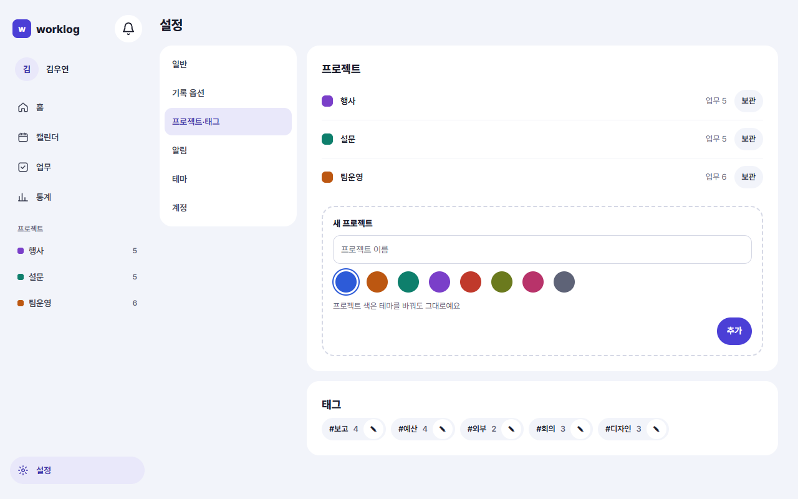
크게 보기, 원본 크기로 새 탭에서 열림 ↗태그
- 만들기: 입력창에
#이름으로 적으면 저장할 때 자동으로 만들어져요. 업무 상세의 + 태그 칸에 적어도 돼요. - 이름 규칙: 공백과
#없이 30자까지예요. - 이름 바꾸기·지우기: 설정 › 프로젝트·태그의 태그 칩에서 ✎를 눌러요. 태그 옆 숫자는 그 태그를 쓴 업무 수예요.
- 태그를 지우면 모든 업무에서 떨어져요. 아래에 "태그 1개를 지웠어요 · 되돌리기"가 떠 있는 동안은 되돌릴 수 있어요.
업무 상세
목록에서 업무 제목을 누르면 오른쪽에 상세가 열려요(모바일은 화면 전체). 닫을 때는 ×나 Esc를 눌러요.
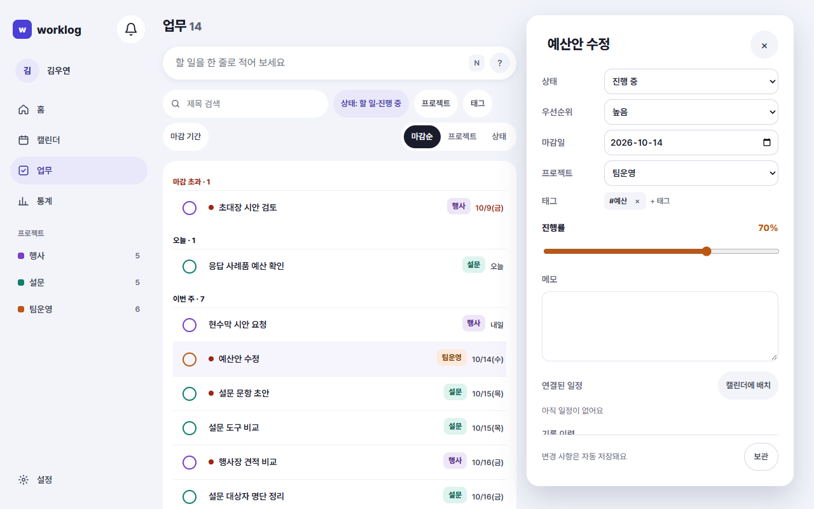
크게 보기, 원본 크기로 새 탭에서 열림 ↗저장 버튼이 없어요. 칸을 고치면 바로 저장되고, 아래에 "변경 사항은 자동 저장돼요"라고 적혀 있어요.
위에서 아래로 이런 칸이 있어요.
| 칸 | 내용 |
|---|---|
| 제목 | 눌러서 고쳐요 |
| 상태·우선순위·마감일·프로젝트·태그 | 각각 고르거나 적어요 |
| 진행률 | 막대를 끌어요(10% 단위) |
| 메모 | 5,000자까지 적을 수 있어요 |
| 연결된 일정 | 이 업무가 놓인 일정을 앞으로 90일 안에서 최대 5개 보여 줘요. 없으면 캘린더에 배치로 바로 잡을 수 있어요 |
| 기록 이력 | 이 업무로 남긴 '했어요' 기록이 최근 날짜부터 나와요. 눌러서 고칠 수 있어요 |
| 보관 | 업무를 목록에서 치워요(보관함으로 가요) |
다른 곳(다른 기기·탭)에서 먼저 고쳤다면 "다른 곳에서 먼저 수정됐어요. 이 변경은 저장되지 않았어요" 띠가 떠요. 새로 불러오기를 누른 뒤 다시 고쳐 주세요.
보관하기와 보관함
잘못 만든 업무나 다 쓴 업무는 먼저 보관해서 목록에서 치워요. 완전히 지우려면 보관함에서 영구 삭제해요.
| 방법 | 어디서 |
|---|---|
| 목록 줄 오른쪽 ⋯ › 보관 | 웹·모바일 모두 |
| 상세의 보관 | 웹·모바일 모두 |
| 키보드 Delete | 웹에서 목록 행에 키보드 포커스가 있을 때 |
보관하면 목록에서 사라지고 "업무 1개를 보관했어요 · 되돌리기"가 떠요. 보관해도 업무의 상태·마감일은 바뀌지 않아요. 보관한 업무에 연결된 일정에는 새 확인 대기가 생기지 않아요.
보관함에서 복원하기
보관한 업무는 보관함에 모여요. 업무 목록 맨 아래의 보관함 ›을 누르거나, 모바일은 하단 탭의 더보기 › 보관함으로 열어요.
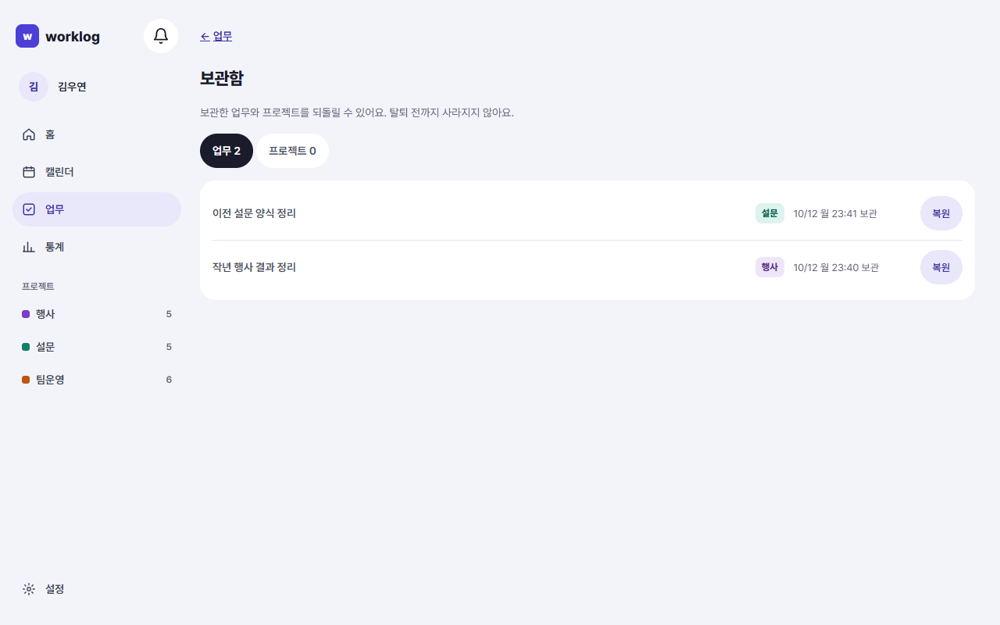
크게 보기, 원본 크기로 새 탭에서 열림 ↗- 위쪽 탭으로 업무와 프로젝트를 오가요.
- 보관한 순서대로(최근 것이 위) 보이고, 줄마다 보관한 날짜·시각이 적혀 있어요.
- 복원을 누르면 목록으로 돌아가요. "'이름'을 복원했어요"가 뜨고 보기로 바로 열어 볼 수 있어요.
- 영구 삭제는 아래에서 다뤄요. 영구 삭제하지 않은 항목은 탈퇴하기 전까지 남아요.
보관함에서 영구 삭제하기
보관함의 줄마다 복원 옆에 영구 삭제가 있어요. 누르면 확인 창이 뜨고, 한 번 더 영구 삭제를 눌러야 지워져요. 영구 삭제는 되돌릴 수 없어요.
| 지우는 것 | 남는 것 |
|---|---|
| 업무 | 그 업무로 남긴 기록과 일정은 그대로 남고, 업무 연결만 없어져요. 아직 확인하지 않은 확인 대기만 함께 지워져요. 통계에서는 그 시간이 '업무 없음'으로 옮겨져요 |
| 프로젝트 | 그 프로젝트의 업무는 지워지지 않고 '프로젝트 없음'으로 옮겨져요 |
- 보관함에 있는 것만 영구 삭제할 수 있어요. 목록에 있는 업무는 먼저 보관해 주세요.
- 그 업무로 타이머가 돌고 있어도 지울 수 있어요. 타이머 기록은 '업무 없음'으로 남아요.
헷갈리는 짝
| 짝 | 차이 |
|---|---|
| 완료 ↔ 보관 | 완료는 "끝냈어요"(결과 기록이 남아요). 보관은 "목록에서 치웠어요"(상태는 그대로예요) |
| 보류 ↔ 보관 | 보류는 상태 필터로 다시 볼 수 있는 잠깐 멈춤. 보관은 보관함에 들어가요 |
| 영구 삭제 ↔ 보관 | 보관은 목록에서 치우는 것(보관함에서 복원할 수 있어요). 영구 삭제는 보관함에서만 하고 되돌릴 수 없어요 |
| 프로젝트 ↔ 태그 | 프로젝트는 하나·색 있음·사이드바에 보임, 태그는 여러 개·이름만 |
6. 일정과 캘린더
이 장을 읽으면 캘린더에서 일정을 만들고, 옮기고, 반복으로 잡고, 업무를 시간에 끌어다 놓는 방법을 알 수 있어요.
일정은 "언제 할지"를 적어 두는 것이에요
일정은 캘린더에 잡아 둔 시간이에요. 일정이 있다고 그 일을 한 것으로 치지 않아요. 한 일은 기록으로 따로 남아요(3장).
- 일정은 업무를 연결해도 되고 안 해도 돼요. "외부 협력사 미팅"처럼 업무가 없는 일정도 괜찮아요.
- 업무를 연결한 일정이 끝나면 앱이 확인 대기를 만들어 두고, 내가 확인하면 기록이 돼요.
캘린더 화면
사이드바의 캘린더를 누르면 열려요. 웹은 주 보기, 모바일은 일 보기로 열려요.
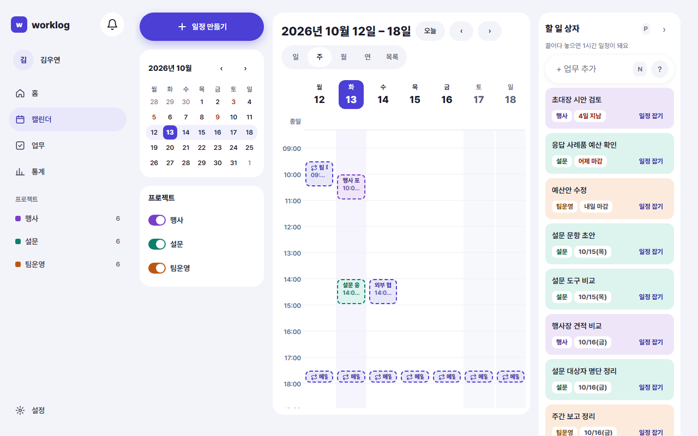
크게 보기, 원본 크기로 새 탭에서 열림 ↗위쪽에서 날짜와 보기를 바꿔요.
| 이름 | 하는 일 | 단축키 |
|---|---|---|
| 오늘 | 오늘이 있는 날·주·달로 돌아와요 | T |
| ‹ › | 이전·다음 날(주·달·해)로 가요 | K / J |
| 일·주·월·연·목록 | 보기를 바꿔요 | D · W · M · Y · A |
| 일정 만들기 | 새 일정을 만들어요 | C |
| 업무 패널 접기·펼치기 | 오른쪽 업무 목록을 접고 펼쳐요 | P |
단축키는 입력창에 글자를 쓰는 중에는 동작하지 않아요. 설정 › 일반에서 끌 수도 있어요(9장).
왼쪽 사이드바에는 작은 달력과 프로젝트 목록이 있어요. 프로젝트 이름을 누르면 그 프로젝트의 일정이 캘린더에서 숨겨지고, 다시 누르면 돌아와요. 숨김은 이 브라우저에만 기억돼요.
지금과 오늘 찾기
- 일·주 보기에서 오늘 날짜 머리글이 구분돼 보이고, 오늘 열에는 지금 시각을 가리키는 선이 그어져요.
- 월·연 보기에서도 오늘 날짜가 구분돼요.
- 다른 날로 갔다면 오늘을 눌러 돌아와요.
- 월 보기에서 공휴일은 날짜 옆에 이름이 보여요.
보기마다 쓰임이 달라요
| 보기 | 이럴 때 써요 |
|---|---|
| 일 | 하루를 15분 단위로 짜고, 오른쪽에서 이날의 기록을 함께 봐요 |
| 주 | 이번 주 일정을 한눈에 보고 끌어서 옮겨요 |
| 월 | 한 달의 분포를 봐요. 날짜 칸에 일정이 최대 3개까지 보여요. 모바일에서는 일정이 점으로 보이고, 날짜를 누르면 그날 일 보기로 가요 |
| 연 | 일 년의 흐름을 봐요. 날짜나 달을 누르면 그곳으로 가요 |
| 목록 | 다가오는 일정을 줄줄이 봐요. 지난 일정 보기로 이전 것도 불러와요 |
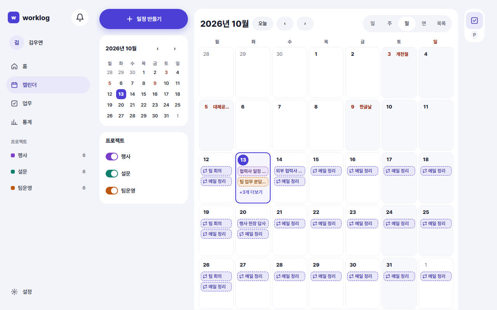
크게 보기, 원본 크기로 새 탭에서 열림 ↗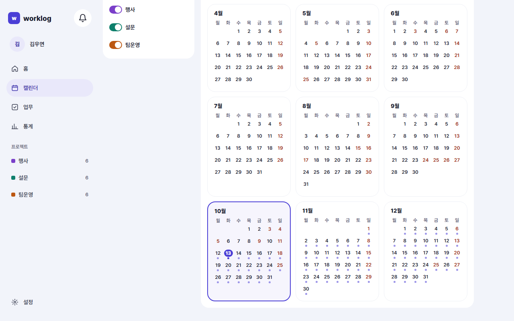
크게 보기, 원본 크기로 새 탭에서 열림 ↗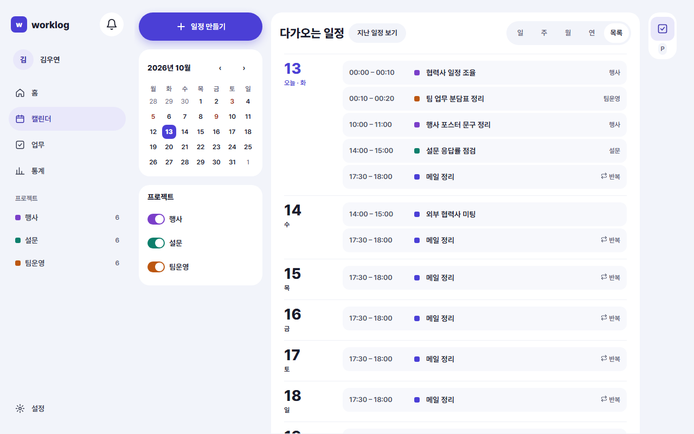
크게 보기, 원본 크기로 새 탭에서 열림 ↗일정이 많은 날
- 일·주 보기에서 일정이 겹치면 옆으로 나란히 놓여요. 너무 많이 겹치면 일부가 "14시대 일정 3개 더" 같은 버튼으로 묶여요. 누르면 그 일정들이 목록으로 펼쳐지고, 목록에서 고르면 상세가 열려요.
- 월 보기에서 하루에 일정이 4개 이상이면 두 개만 보이고 +n개 더보기가 나와요. 누르면 그날의 일정이 모두 담긴 작은 창이 열려요.
- 날짜 숫자를 누르면 그날의 일 보기로 가요.
일정 만들기
세 가지 길이 있어요. 모두 같은 "새 일정" 창에서 끝나요.
- 빈 시간대를 누르거나 끌어요. 일·주 보기에서 빈 칸을 누르면 그 시각에서 시작하는 일정이, 위아래로 끌면 끈 만큼의 일정이 잡혀요. 15분 단위로 맞춰져요. 월 보기에서는 날짜 칸의 빈 곳을 누르면 그날의 종일 일정을 만들어요.
- 일정 만들기 버튼 또는 C.
- 업무 패널의 업무를 시간대에 끌어다 놓아요(아래 "업무를 일정으로").
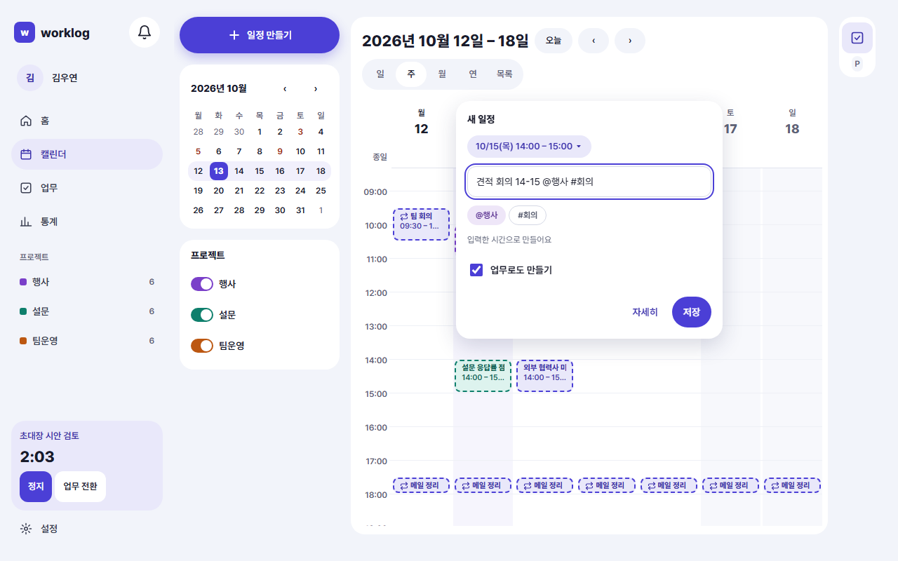
크게 보기, 원본 크기로 새 탭에서 열림 ↗빠른 만들기 창에서는 이렇게 해요.
- 한 줄 입력에 이름과 시간을 같이 적어도 돼요. 예:
견적 회의 14-15 @행사 #회의. 시간은 일정으로 읽히고@·#은 업무에 넣을 프로젝트·태그로 읽혀요(7장). - 위쪽의 날짜·시간을 눌러 바꿀 수 있어요.
- 업무로도 만들기를 켜면 일정과 함께 업무도 만들어져 서로 연결돼요.
- 저장을 누르면 끝나요. 더 정할 것이 있으면 자세히로 전체 창을 열어요.
일정 상세 창
일정 블록을 누르면 상세 창이 열려요. 새 일정을 만들 때와 같은 창이에요.
| 항목 | 설명 |
|---|---|
| 제목 | 필수예요. 비우면 "일정 이름을 적어 주세요"가 나와요 |
| 날짜·시작·종료 | 종료는 시작보다 뒤여야 해요 |
| 종일 | 켜면 시각 없이 날짜만 잡아요. 날짜 위쪽 종일 줄에 보여요 |
| 반복 | 없음 · 매일 · 매주(요일 선택) · 매월 |
| 반복 종료 | 종료 없음 · 날짜까지 · 횟수(1~999) |
| 메모 | 5000자까지 적어요 |
| 연결 업무 | 업무 이름으로 찾아 연결해요. 새 업무로 바로 만들 수도 있고, 해제로 끊어요 |
| 기록 | 이 일정에서 남긴 기록의 상태와 기록 보기 |
일정이 끝난 뒤에 열어 보면 기록 줄에서 상태를 알 수 있어요. 상태 이름은 했어요 · 확인 대기 · 안 했어요이고, 남긴 기록이 없으면 "이 일정에서 남긴 기록이 없어요"라고 나와요.
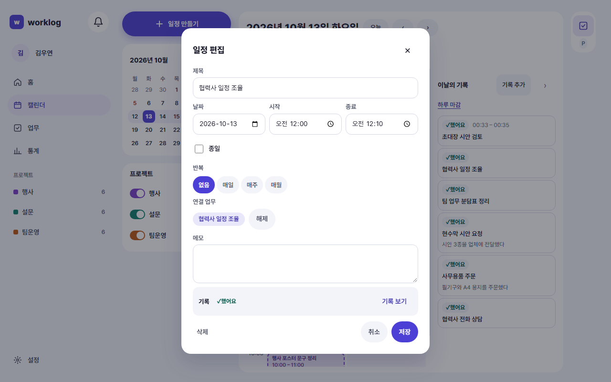
크게 보기, 원본 크기로 새 탭에서 열림 ↗옮기기·길이 바꾸기·삭제
모두 확인 창 없이 바로 실행되고, 화면 아래에 되돌리기가 5초 동안 떠요(9장).
| 하고 싶은 일 | 방법 |
|---|---|
| 시간·날짜 옮기기 | 일정 블록을 끌어 놓아요. 15분 단위로 맞춰져요. 월 보기에서는 다른 날짜 칸으로 끌어요 |
| 길이 바꾸기 | 일·주 보기에서 블록 아래 끝을 끌어요 |
| 자세히 고치기 | 블록을 눌러 상세에서 고치고 저장해요 |
| 삭제 | 상세 창의 삭제. "일정을 삭제했어요" 토스트가 뜨고 5초 안에 되돌리기를 누르면 돌아와요 |
키보드로는 일정 블록을 열어 상세 창에서 시간을 바꿔요.
휴대폰에서 끌기
손가락으로는 스크롤과 끌기가 겹치지 않도록 이렇게 동작해요.
- 바로 밀면 스크롤돼요.
- 짧게 누르면 일정이 열려요.
- 약 0.5초 길게 누른 뒤에 움직이면 만들기·옮기기·길이 바꾸기가 시작돼요.
길게 누르는 동안 손가락이 많이 움직이면 스크롤로 보고 끌기를 시작하지 않아요.
반복 일정
일정 상세의 반복에서 매일·매주·매월을 정해요. 예: "매주 월 09:30 팀 회의", "매일 17:30 메일 정리".
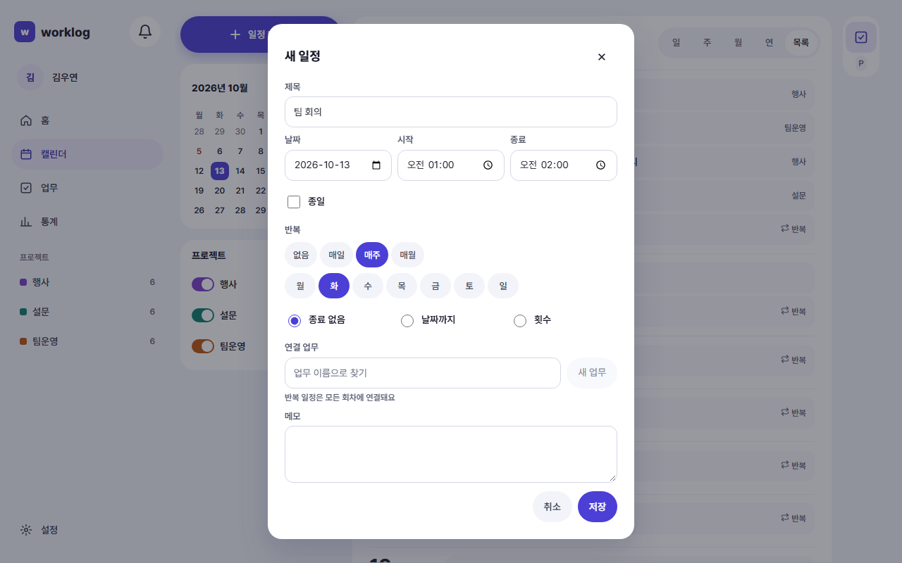
크게 보기, 원본 크기로 새 탭에서 열림 ↗- 매주를 고르면 요일을 고를 수 있어요. 시작일의 요일은 반드시 포함해야 해요.
- 반복은 종료 없음, 날짜까지, 횟수 중에서 끝을 정해요.
- 반복 일정에 업무를 연결하면 모든 회차에 연결돼요.
"이 일정만"과 "모든 일정"
반복 일정을 옮기거나 고치거나 지우려고 하면 어느 범위인지 물어요.
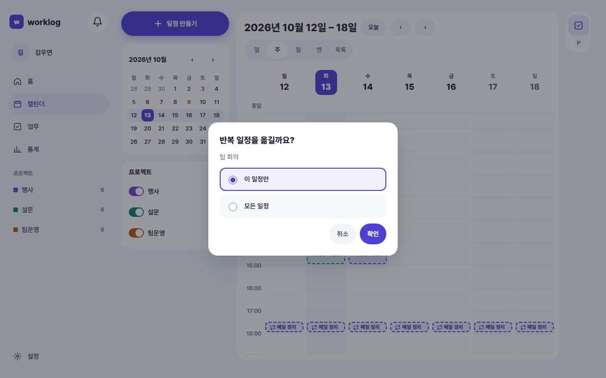
크게 보기, 원본 크기로 새 탭에서 열림 ↗| 선택 | 바뀌는 범위 |
|---|---|
| 이 일정만 | 누른 회차 하나 |
| 모든 일정 | 반복 전체 |
- 질문 제목은 하려는 일에 따라 "반복 일정을 옮길까요?", "수정할까요?", "삭제할까요?"로 달라요.
- 취소를 누르면 아무것도 바뀌지 않아요.
- 일정을 지우거나 시각·반복을 바꾸면 그 일정에 이미 만들어진 확인 대기는 지워져요.
업무를 일정으로
오른쪽 업무 패널(맨 위에 "할 일 상자"라고 적혀 있어요)에는 일정을 아직 잡지 않은 업무 가운데 끝내지 않은 것이 마감일 순으로 보여요.
- 상태가 할 일·진행 중·보류인 업무만 나와요. 완료한 업무는 안 나와요.
- 한 번에 30개씩 보이고 더 불러오기로 이어서 봐요. 마감일이 없는 업무는 날짜 없는 업무 n개 더 보기로 따로 열어요.
- 맨 위 입력칸 + 업무 추가에 한 줄로 적어 바로 업무를 만들 수 있어요.
 크게 보기, 원본 크기로 새 탭에서 열림 ↗
크게 보기, 원본 크기로 새 탭에서 열림 ↗일정을 잡는 방법은 두 가지예요.
- 업무 카드를 캘린더의 원하는 시간대로 끌어다 놓아요. "끌어다 놓으면 1시간 일정이 돼요"라는 안내처럼, 그 업무가 연결된 1시간짜리 일정이 생겨요. 시간은 나중에 고칠 수 있어요.
- 카드의 일정 잡기를 눌러요. 새 일정 창이 그 업무가 연결된 채로 열려요. 끌기가 어려운 휴대폰이나 키보드로 쓸 때는 이 방법을 써요.
일정을 잡아도 업무의 상태는 바뀌지 않아요. 업무가 끝났을 때는 업무 쪽에서 완료해요(5장).
패널이 좁은 화면에서는 접혀 있어요. 오른쪽 가장자리의 업무 아이콘(업무 패널 펼치기)을 누르거나 P를 누르면 펼쳐져요. 1280px 이상의 넓은 화면에서는 처음부터 펼쳐져 있어요.
계획과 기록은 이렇게 구분해요
일 보기는 두 가지를 함께 보여 줘요.
- 가운데 시간표: 계획이에요. 일정이 있던 자리예요.
- 오른쪽 "이날의 기록": 그날 남긴 기록이에요. 항목마다 했어요·확인 대기·안 했어요 표시와, 일정에서 온 기록이면 "계획 14:00–15:00" 같은 계획 시간이 붙어요. 항목을 누르면 기록을 열어 고칠 수 있어요.
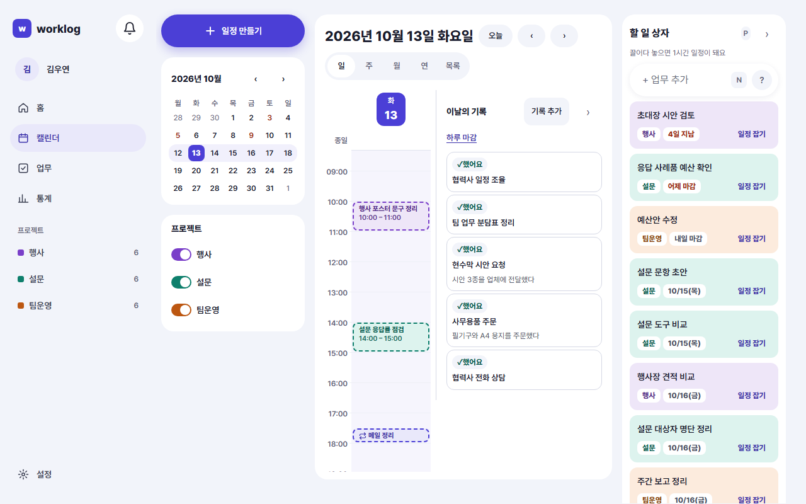
크게 보기, 원본 크기로 새 탭에서 열림 ↗- 기록 추가로 일정과 상관없는 기록을 직접 남겨요.
- 하루 마감은 오늘과 지난 날에서만 보여요. 눌러서 그날의 확인 대기를 정리하고 마감해요(4장).
- 접었을 때는 "3건 · 대기 1 · 마감함"처럼 요약만 보여요.
- 시간 기록 옵션을 켜면 일 보기가 계획과 실제 두 열로 바뀌어 실제로 한 시간이 따로 보여요(8장).
모바일의 일 보기에서는 시간표 아래에 이날의 기록이 이어져요.
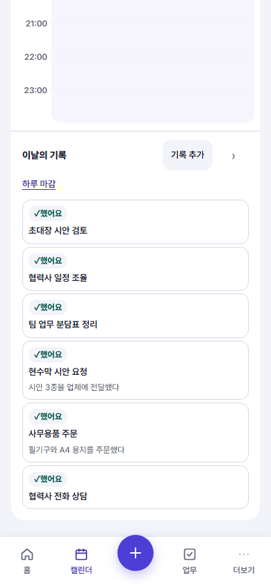
크게 보기, 원본 크기로 새 탭에서 열림 ↗7. 빠른 입력
이 장을 읽으면 한 줄로 업무를 만들고, 시간을 적어 일정까지 한 번에 잡는 법을 알 수 있어요.
어디서 적나요
빠른 입력창은 같은 모양으로 여러 곳에 있어요. 어디서 적어도 같은 문법이에요.
| 어디 | 어떻게 |
|---|---|
| 홈 | 화면 맨 위 입력창 |
| 업무 목록 | 목록 위 입력창 |
| 캘린더 | 일 보기 옆 업무 패널의 입력창 |
| 모바일 | 하단 탭 가운데 + 버튼 → "빠른 기록" 시트 |
| 어디서든 | N 키(입력창에 포커스가 없을 때), 또는 Ctrl+K로 명령 팔레트를 열어 '업무 추가' |
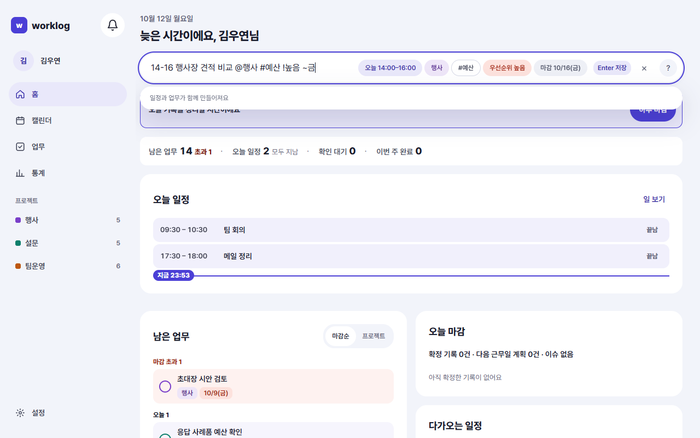
크게 보기, 원본 크기로 새 탭에서 열림 ↗적은 뒤 Enter를 누르면 저장돼요. 모바일 시트에서는 입력칸 안의 저장 버튼을 눌러요.
한 줄에 쓸 수 있는 것
낱말을 공백으로 띄워 적어요. 순서는 상관없어요. 시간·날짜·프로젝트·우선순위·마감은 종류마다 처음 쓴 것 하나만 읽어요. 읽지 못한 낱말은 모두 제목이 돼요.
| 쓰는 것 | 적는 법 | 예 |
|---|---|---|
| 제목 | 나머지 낱말 | 초대장 시안 검토 |
| 시간 | 시작-끝 (24시간제) | 14-16 · 9:30-10:30 · 9:00~10:00 |
| 시각 하나 | 시각만 | 15:00 · 14시 · 오후 3시 → 1시간 일정 |
| 날짜 | 말이나 날짜 | 오늘 · 내일 · 모레 · 수요일 · 다음주 수요일 · 10/12 · 10월 12일 |
| 프로젝트 | @이름 | @행사 |
| 태그 | #이름 (여러 개 가능) | #예산 #외부 |
| 우선순위 | !높음 · !보통 · !낮음 | !높음 |
| 마감 | ~날짜 | ~금 · ~내일 · ~10/12 |
시간은 오전·오후를 붙일 수 있어요(오후 2시~3시). 구분자는 - ~이고 앞뒤에 공백이 있어도 돼요(14:00 - 15:00).
시간을 쓰면 무엇이 만들어지나요
시간을 적었는지가 가장 큰 차이예요.
| 적은 것 | 만들어지는 것 |
|---|---|
| 시간 없음 | 업무만 |
| 시간 있음 | 업무와, 그 업무에 연결된 일정을 함께 |
| 날짜만(시간 없음) | 업무만, 그 날짜가 마감일 |
~날짜 | 업무의 마감일(일정은 만들지 않아요) |
입력창 아래 안내가 지금 무엇이 만들어질지 미리 알려 줘요. "업무가 만들어져요" 또는 "일정과 업무가 함께 만들어져요"예요.
시간을 적어 만든 일정이 끝나면, 앱이 그 일정의 확인 대기를 만들어 홈에서 "했어요"를 묻는 흐름으로 이어져요(4장).
예시 모음
아래 예시는 가나다상사 마케팅팀 대리가 쓰는 입력이에요. 오늘이 월요일이라고 가정해요.
업무만 만들기
| 입력 | 만들어지는 것 |
|---|---|
예산안 수정 | 업무 "예산안 수정". 상태 할 일, 마감 없음 |
예산안 수정 !높음 | 업무 + 우선순위 높음 |
주간 보고 정리 ~금 | 업무 + 마감 금요일 |
설문 문항 초안 @설문 #보고 | 업무 + 프로젝트 '설문' + 태그 #보고 |
예산안 수정 내일 | 업무 + 마감 내일(시간이 없어서 일정은 없어요) |
시간을 쓰면 일정도 함께
| 입력 | 만들어지는 것 |
|---|---|
14-16 행사장 견적 비교 | 업무 + 오늘 14:00–16:00 일정 |
내일 10-11 설문 문항 초안 @설문 | 업무(프로젝트 설문) + 내일 10:00–11:00 일정 |
오후 3시 팀 회의 | 업무 + 오늘 15:00–16:00 일정(시각 하나는 1시간) |
다음주 월요일 오후 2시~3시 주간 보고 정리 | 업무 + 다음 주 월요일 14:00–15:00 일정 |
14-16 행사장 견적 비교 @행사 #예산 !높음 ~금 | 업무(프로젝트 행사, 태그 #예산, 우선순위 높음, 마감 금요일) + 오늘 14:00–16:00 일정 |
마지막 예시처럼 시간과
~마감을 같이 쓰면, 일정은 시간대로 잡히고 마감일은 업무에 붙어요. 두 가지가 따로 적용돼요.
날짜 쓰는 법
| 쓰고 싶은 날 | 적는 법 |
|---|---|
| 오늘·내일·모레 | 오늘 내일 모레 |
| 이번 주 수요일 | 수요일 · 이번주 수 |
| 다음 주 수요일 | 다음주 수요일 · 다음주 수 |
| 10월 12일 | 10/12 · 10월 12일 |
- 요일만 쓰면 오늘을 포함해 가장 가까운 그 요일이에요. 월요일에
월요일이라고 쓰면 오늘이에요. 월/일만 쓰면 오늘에서 가장 가까운 해의 날짜예요.- 한 글자 요일(
수)은다음주 수처럼 주 앞말이 있거나~수처럼 마감일 때만 읽어요. 그냥수는 제목으로 남아요("일 정리"를 요일로 읽지 않으려는 규칙이에요).
적는 동안 보이는 칩
입력하는 동안 읽은 내용이 칩으로 보여요. 칩이 의도와 다르면 저장하기 전에 고칠 수 있어요.
- 시간 칩: "오늘 14:00–16:00"처럼 날짜와 시각이 보여요.
- 프로젝트 칩: 프로젝트 색으로 보여요.
- 태그 칩: 태그마다 하나씩. 없는 태그는 점선으로 "+ 새 태그 '이름'"이라고 알려 줘요(저장할 때 자동으로 만들어요).
- 우선순위·마감 칩: "우선순위 높음", "마감 금 …"처럼 보여요.
칩을 누르면 그 값만 고르는 메뉴가 열려요(예: 마감을 오늘·내일·금요일 중에서 선택). 메뉴에서 빼기를 고르면 그 낱말이 입력에서 빠져요.
읽지 못했을 때
| 상황 | 화면 | 고치는 법 |
|---|---|---|
제목이 없어요(14-16만 적음) | "할 일 이름을 적어 주세요" | 제목을 덧붙여요 |
없는 프로젝트(@신규) | 점선 칩 "+ 새 프로젝트 '신규'". Enter를 누르면 "프로젝트를 새로 만들까요?"라고 물어요 | 칩을 누르거나 Enter를 한 번 더 눌러요 |
시간처럼 보이는데 읽지 못함(15:00까지) | "시간으로 읽지 못했어요: 15:00까지" | 15:00 또는 14-15처럼 고쳐요 |
우선순위를 잘못 적음(!1) | "우선순위는 !1 대신 !높음·!보통·!낮음으로 적어요" | !높음으로 고쳐요 |
숫자만 적은 것(
14 보고서)이나3시간 회의의3시간은 시간으로 읽지 않아요. 제목으로 남아요.
알아 두면 좋은 것
- 프로젝트 이름에 공백이 있으면
@로 쓸 수 없어요.@는 한 낱말이라서 이름이 공백 앞에서 끊겨요. 이런 프로젝트는 입력 뒤 업무 상세의 프로젝트 칸에서 골라요. 오전·오후없이2시-3시라고 쓰면 새벽 2시~3시로 읽어요. 오후라면오후 2시~3시또는14-15로 적어요.- 시작보다 끝이 이르면 오후로 읽어요:
11-1은 11:00–13:00이에요. - 같은 이름의 태그는 하나로 합쳐져요(
#예산 #예산). 프로젝트(@)는 처음 하나만 읽고, 두 번째부터는 제목에 남아요. - 저장하면 "업무 1개를 추가했어요" 또는 "업무와 일정 1개를 추가했어요"가 떠요. 잘못 만들었다면 되돌리기를 눌러요. 새로 만든 태그는 되돌려도 남아요.
- 처음 쓸 때 입력칸 오른쪽 ? 를 누르면 문법 도움말이 열려요. 예시를 누르면 입력창에 채워져요.
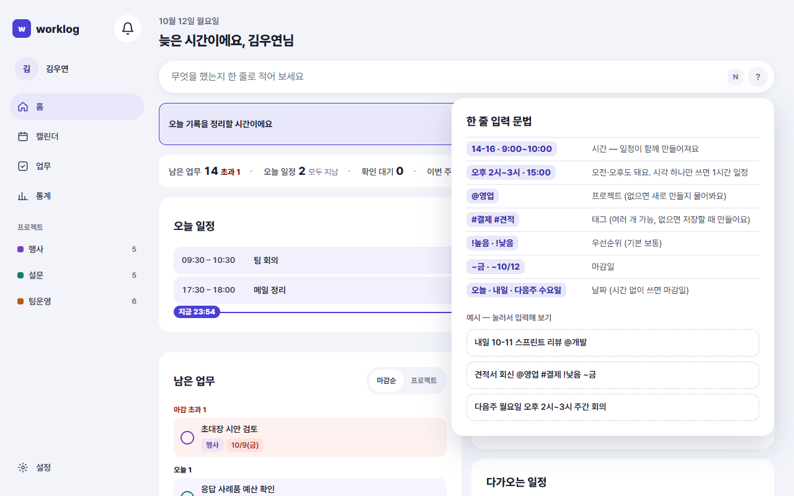
크게 보기, 원본 크기로 새 탭에서 열림 ↗자주 하는 업무 제안
입력창이 비어 있을 때 입력창을 누르면 "자주 하는 업무"가 최대 3개 떠요. 같은 요일·같은 시간대에 2번 이상 만든 업무예요. 누르면 제목·프로젝트·태그가 입력창에 채워지니 시간을 덧붙여 Enter만 누르면 돼요.
8. 시간 기록(옵션)
이 장을 읽으면 업무에 쓴 시간을 재는 법과, 비어 있는 시간을 채우는 법을 알 수 있어요.
먼저 알아 둘 것
- 시간 기록은 옵션이에요. 처음에는 꺼져 있어요. 꺼져 있어도 업무·일정·기록은 모두 쓸 수 있어요.
- 켜면 업무에 쓴 시간을 재서, 계획과 실제를 나란히 볼 수 있어요.
- 껐다 켜도 기존 시간 기록은 지워지지 않아요. 화면에서만 숨겨요.
켜기
- 사이드바 아래 설정을 열어요(모바일은 더보기 › 설정).
- 기록 옵션을 눌러요. (명령 팔레트 Ctrl+K에서 "기록 옵션"을 찾아도 돼요.)
- 시간 기록 스위치를 켜요. 누르는 즉시 저장돼요.
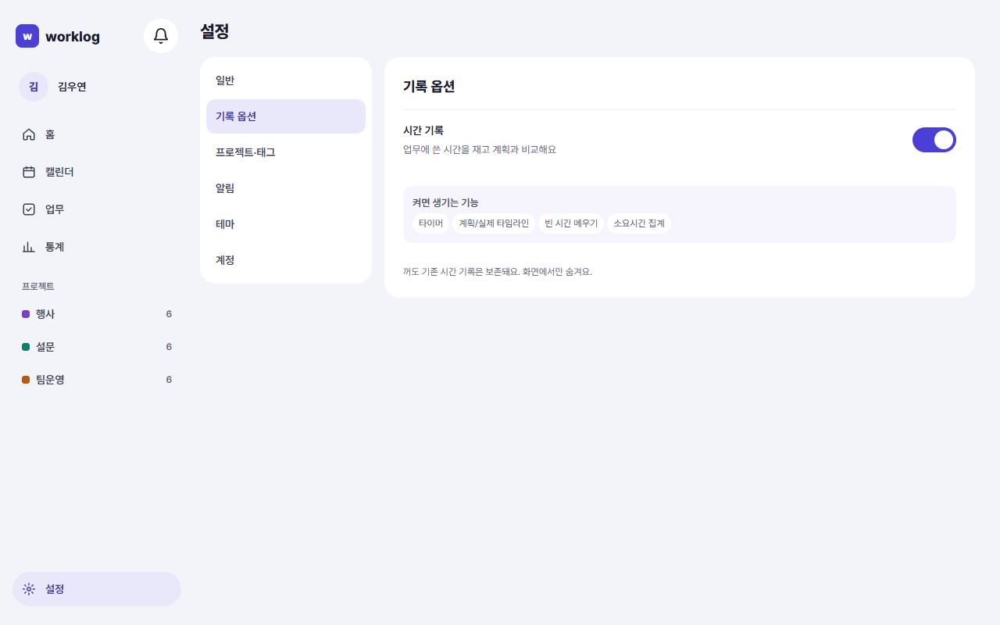
크게 보기, 원본 크기로 새 탭에서 열림 ↗스위치 아래 "켜면 생기는 기능"에 네 가지가 적혀 있어요.
| 기능 | 하는 일 |
|---|---|
| 타이머 | 업무를 시작할 때 누르고, 끝나면 멈춰요. 시간이 기록돼요 |
| 계획/실제 타임라인 | 홈에서 계획과 실제를 두 열로 나란히 봐요 |
| 빈 시간 메우기 | 기록이 없는 시간을 한 번에 채워요 |
| 소요시간 집계 | 오늘 쓴 시간을 합쳐서 보여 줘요 |
켜기 전과 후, 홈은 이렇게 달라요
| 시간 기록 꺼짐 | 시간 기록 켜짐 | |
|---|---|---|
| 홈 '오늘 일정' | 계획 목록. 일정마다 했어요 · 수정 · 안 했어요 | 계획과 실제 두 열 |
| 시간 합계 | 없음 | '실제' 머리글에 "오늘 N시간" |
| 비어 있는 시간 | 안 보여요 | 점선 빈 시간 버튼 |
| 기록 입력 창 | 한 일과 결과만 | 시작~종료 또는 소요시간 칸이 더해져요 |
켠 뒤에도 '시간 없이 남긴 기록'은 하단에 "시간 없이 남긴 기록 n건"으로 따로 모여요. 시간을 적지 않은 기록도 그대로 남아요.
타이머
시작하기
업무를 시작할 때 타이머를 켜요. 시작하는 길은 여러 곳이에요.
| 어디서 | 어떻게 |
|---|---|
| 업무 목록 | 업무 줄의 ▶ 버튼(완료한 업무에는 없어요) |
| 일정 상세 | 이 일정으로 타이머 시작(오늘 일정 중 아직 끝나지 않은 것) |
| 명령 팔레트 | Ctrl+K → "타이머 시작" |
| 모바일 빠른 기록 시트 | 지금 하는 일로 타이머 시작 |
"타이머 시작" 창이 열리면 업무를 고르고 시작을 눌러요. 업무가 없는 일은 할 일 칸에 적어요. 업무를 고르면 칸을 비워도 돼요(비우면 업무 제목이 쓰여요). 둘 다 비어 있으면 "업무를 고르거나 할 일을 적어 주세요"가 떠요.
돌아가는 동안
타이머가 돌면 미니 플레이어가 나타나요. 데스크톱은 사이드바 아래, 모바일은 하단 탭 위쪽이에요.
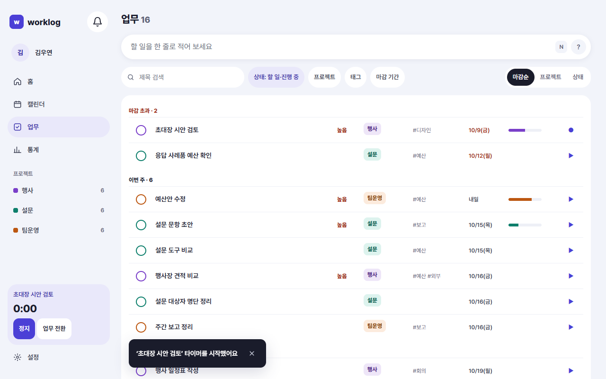
크게 보기, 원본 크기로 새 탭에서 열림 ↗미니 플레이어에는 업무 이름, 흐른 시간, 정지, 업무 전환이 있어요.
- 흐른 시간은 서버에 적힌 시작 시각으로 재요. 브라우저를 닫아도, 다른 기기에서 열어도 이어서 보여요.
- 타이머는 한 번에 하나예요. 다른 업무로 시작하면 먼저 돌던 타이머가 멈추고 기록이 남아요.
- 업무 전환을 누르면 지금 것을 멈추고 새 업무로 바로 시작해요.
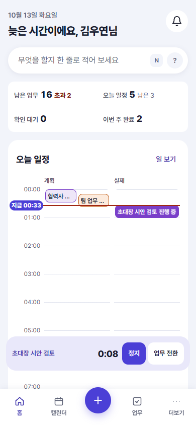
크게 보기, 원본 크기로 새 탭에서 열림 ↗멈추기
정지를 누르면 흐른 시간만큼 기록이 남아요. 알림 문구는 상황마다 달라요.
| 상황 | 알림 | 기록 |
|---|---|---|
| 보통 | "기록을 남겼어요" | 시작~정지 시각으로 기록 |
| 1분이 안 됨 | "1분이 안 돼서 기록하지 않았어요" | 기록하지 않아요 |
| 24시간이 넘음 | "24시간이 넘어 24시간까지만 기록했어요. 실제 시간으로 고쳐 주세요" + 시간 고치기 | 24시간까지만 |
- 정지는 되돌리기가 없어요. 잘못 멈췄으면 기록을 열어 시간을 고쳐요.
- 일정에서 시작한 타이머가 1분 안에 멈추면 "…계획은 확인 대기로 돌아갔어요"라고 알려 줘요.
일정에서 시작하면
일정에서 타이머를 시작하면, 그 일정의 확인 대기가 따로 또 생기지 않아요. 타이머로 잰 시간이 곧 그 일정의 기록이에요. 같은 일정에서 이미 기록했다면 "그 계획은 이미 기록했어요"라고 알려 줘요.
시간 기록이 꺼져 있을 때
옵션이 꺼져 있으면 시작이 안 되고 "시간 기록이 꺼져 있어요. 기록 옵션에서 켜 주세요"가 떠요.
이어서 시작하기
타이머를 멈추면, 오늘 이어질 계획이 있을 때 "다음 계획 '…'을(를) 시작할까요?"라고 물어요. 시작을 누르면 바로 그 계획의 타이머가 돌아요. 아니면 괜찮아요를 눌러요.
물어 보는 계획은 오늘 시간이 정해져 있고, 취소하지 않았고, 지금보다 끝나는 시각이 뒤이고, 아직 기록이 없는 것이에요. 지금 진행 중인 계획이 있으면 그것이 먼저, 없으면 가장 빠른 것이 나와요.
빈 시간 메우기
일하다 보면 타이머를 켜지 않은 시간이 생겨요. 그런 시간은 홈의 실제 열에 점선 빈 시간 버튼으로 보여요.
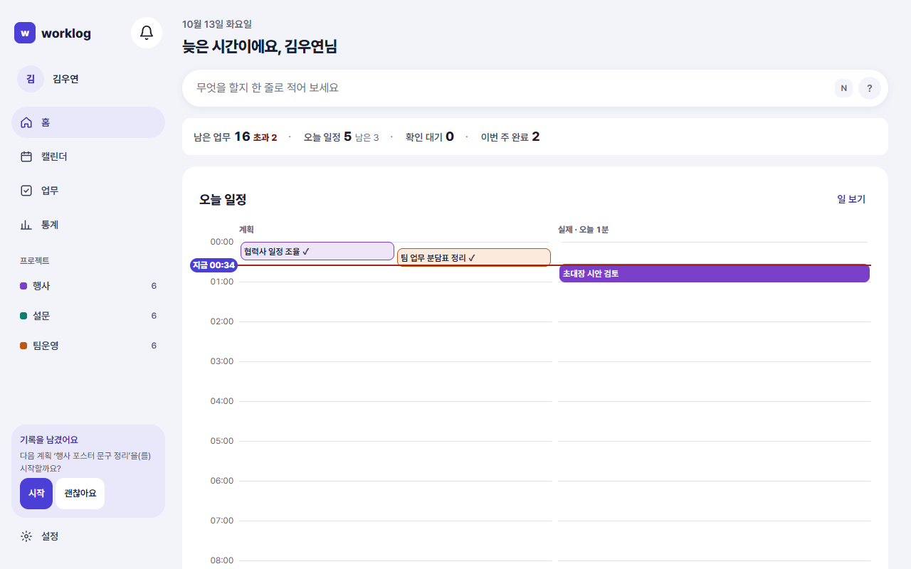
크게 보기, 원본 크기로 새 탭에서 열림 ↗빈 시간이란
- 업무 시간대 안에서 확인된 기록이 없는 구간이에요. 업무 시간대는 설정 › 일반에서 정하고, 처음에는 09:00~18:00이에요.
- 15분 이상인 구간만 보여요.
- 오늘이라면 지금 이후는 빈 시간으로 치지 않아요.
채우는 법
- 빈 시간 버튼을 눌러요. "빈 시간 메우기" 창이 열리고, 시간대와 길이가 위에 보여요.
- 후보 중 하나를 눌러요. 누르는 즉시 기록이 만들어져요.
| 후보 | 뜻 |
|---|---|
| 직전 업무 이어서 | 바로 앞 기록의 업무로 채워요 |
| 이 시간 계획 · HH:MM – HH:MM | 그 시간에 잡아 둔 계획을 했어요로 확인하며 채워요 |
| 자주 하는 업무 | 이 시간대에 자주 한 업무예요 |
| 직접 입력 | "이 시간에 한 일"을 적고 저장해요 |
- 계획 후보를 누르면 그 계획의 확인 대기가 기록으로 바뀌어요. 같은 시간이 두 번 세어지지 않아요. 계획이 빈 시간보다 길면 빈 시간과 겹친 부분만 채워요.
- 채우면 "HH:MM – HH:MM을 채웠어요"와 되돌리기가 떠요. 되돌리면 새로 만든 기록은 보관되고, 확인했던 계획은 확인 대기로 돌아가요.
기록에 시간 적기
시간 기록이 켜져 있으면 기록을 직접 남기거나 고칠 때 시간 칸이 더해져요. 두 가지 중 편한 것을 써요.
- 시작~종료: 예) 14:00~15:30
- 소요시간: 예) 1시간 30분
종료가 시작보다 이르면 다음 날로 읽어요(24시간을 넘을 수는 없어요).
알아 두면 좋은 것
- 시간을 재지 않아도 하루 마감과 통계는 쓸 수 있어요. 시간 기록은 계획과 실제의 차이를 보고 싶을 때만 켜요.
- 기록에 시간이 없으면 '소요시간 집계'에는 들어가지 않아요. "시간 없이 남긴 기록"으로 따로 세요.
- 타이머는 업무 목록 ▶ → 정지만으로도 충분해요. 이어서 시작하기나 빈 시간 메우기는 필요할 때만 써요.
9. 알림과 설정
이 장을 읽으면 하루 마감 알림을 받고, 하루 마감 시각과 테마를 바꾸고, 실수한 동작을 되돌리는 방법을 알 수 있어요.
알림 센터
알림은 앱 안의 알림 센터에 모여요. 지금 받는 알림은 하루 마감 알림 하나예요.
- 웹: 위쪽의 종 모양 버튼을 누르면 알림 목록이 열려요. 안 읽은 알림이 있으면 개수가 보여요.
- 모바일: 종 버튼을 누르면 알림 화면이 전체 화면으로 열려요. 왼쪽 위 뒤로로 돌아와요.
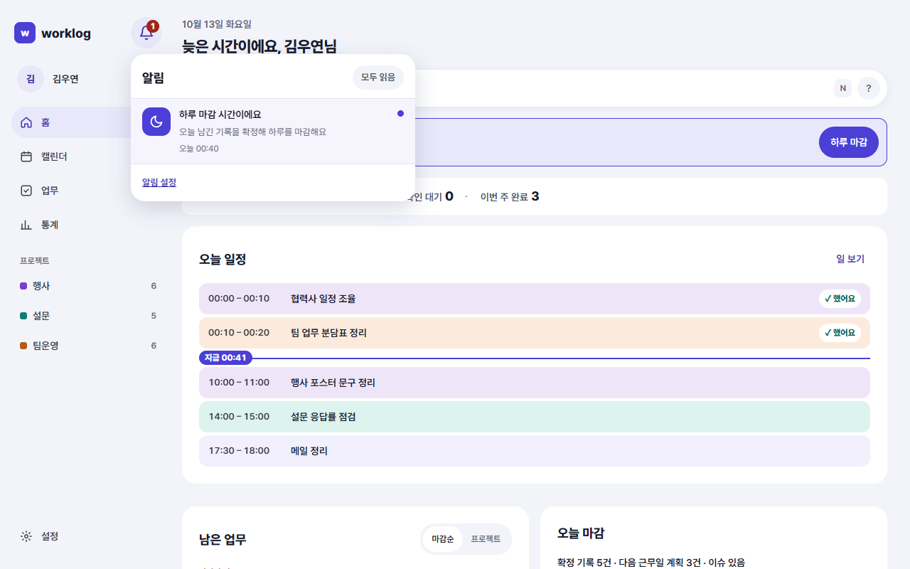
크게 보기, 원본 크기로 새 탭에서 열림 ↗알림 한 줄에는 이런 것들이 있어요.
- 제목 "하루 마감 시간이에요"
- 설명: 확인 대기가 있으면 "확인 대기 3건이 있어요. 1분이면 끝나요", 없으면 "오늘 남긴 기록을 확정해 하루를 마감해요"
- 받은 시각(오늘 18:00 · 어제 18:05 · 10월 1일 …)
- 아직 안 읽은 알림은 점이 보여요
알림을 누르면 읽음으로 바뀌고, 홈 화면에서 그날의 하루 마감 창이 열려요(4장). 지난 날의 알림이면 그 날짜의 하루 마감이 열려요.
| 하고 싶은 일 | 방법 |
|---|---|
| 한꺼번에 읽음 처리 | 안 읽은 알림이 있을 때 목록 위에 보이는 모두 읽음 |
| 오래된 알림 보기 | 목록 아래의 이전 알림 더 보기 |
| 알림 설정으로 가기 | 목록 아래의 알림 설정 |
알림이 하나도 없는데 하루 마감 알림도 꺼져 있다면 "하루 마감 알림이 꺼져 있어요"와 하루 마감 알림 켜기 버튼이 보여요. 켜 둔 뒤 알림이 없을 때는 "새 알림이 없어요"가 보여요.
알림 켜기와 브라우저 허용
설정 › 알림에서 정해요. 처음에는 꺼져 있어요.
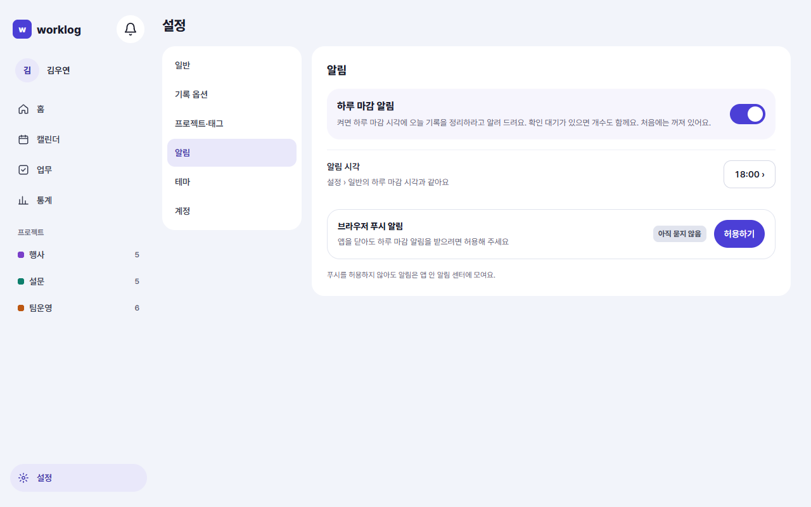
크게 보기, 원본 크기로 새 탭에서 열림 ↗- 하루 마감 알림을 켜요. 켜면 하루 마감 시각에 알림 센터에 알림이 들어와요. 확인 대기가 있으면 개수도 함께 알려 줘요.
- 앱을 닫아 둬도 받고 싶다면 아래 브라우저 푸시 알림의 허용하기를 눌러요. 이때 브라우저가 허용 여부를 한 번 물어봐요.
앱이 먼저 알아서 허용을 묻지는 않아요. 알림을 켠 뒤 허용하기를 눌러야 브라우저의 허용 창이 떠요.
푸시 알림 줄에는 이 기기의 상태가 보여요.
| 상태 | 뜻과 할 일 |
|---|---|
| 아직 묻지 않음 | 허용하기를 눌러요 |
| 이 기기 켜짐 | 앱을 닫아도 받아요. 끄려면 이 기기에서 끄기 |
| 이 기기 꺼짐 | 이 기기에서 켜기로 다시 켜요 |
| 차단됨 | 브라우저에서 막았어요. 주소창 왼쪽 사이트 정보 아이콘 → 알림 → 허용으로 바꾼 뒤 이 화면을 새로 고쳐요 |
| 지원 안 함 | 이 브라우저는 푸시를 못 받아요. 알림 센터로만 알려 줘요 |
- 허용하지 않거나 차단해도 알림은 앱 안 알림 센터에 모여요. 푸시는 덤이에요.
- iPhone에서는 WY Worklog를 홈 화면에 추가해서 열어야 푸시를 받을 수 있어요(1장).
- 로그아웃하면 이 기기의 푸시 알림은 꺼져요. 다시 로그인한 뒤 필요하면 이 기기에서 켜기를 눌러요.
하루 마감 시각
설정 › 일반의 하루 마감 시각이에요. 기본은 18:00이에요.
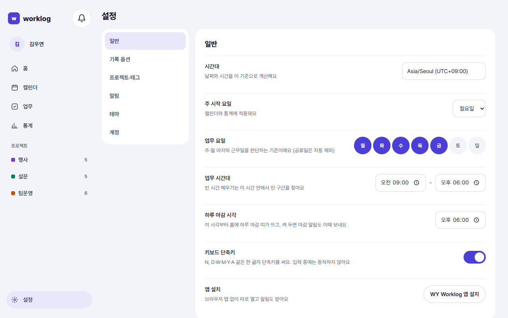
크게 보기, 원본 크기로 새 탭에서 열림 ↗- 이 시각부터 홈 화면에 하루 마감 띠가 떠요.
- 하루 마감 알림을 켜 두었다면 알림도 이 시각에 와요.
- 설정 › 알림의 알림 시각은 같은 값이에요. 누르면 설정 › 일반으로 가요.
시각을 바꾸고 칸에서 벗어나면 바로 저장돼요.
설정 한눈에 보기
사이드바(모바일은 더보기)의 설정으로 들어가요. 웹은 왼쪽에 메뉴가 있고, 모바일은 목록에서 하나를 누르면 그 화면이 열려요. 위쪽 ‹ 설정으로 목록에 돌아와요.
| 메뉴 | 여기서 하는 일 | 자세한 설명 |
|---|---|---|
| 일반 | 시간대, 주 시작 요일, 업무 요일, 업무 시간대, 하루 마감 시각, 키보드 단축키, 앱 설치 | 이 장 |
| 기록 옵션 | 시간 기록(타이머 등) 켜고 끄기 | 8장 |
| 프로젝트·태그 | 프로젝트와 태그 관리 | 5장 |
| 알림 | 하루 마감 알림, 푸시 | 이 장 |
| 테마 | 키 컬러와 배경 | 이 장 |
| 계정 | 이메일 인증, 비밀번호 변경, 로그아웃 | 이 장 |
일반
바꾸면 바로 저장되고, 제목 옆에 잠깐 ✓ 저장됨이 보여요. 따로 저장 버튼은 없어요.
| 항목 | 설명 |
|---|---|
| 시간대 | 날짜와 시간을 이 기준으로 계산해요. 바꿔도 기존 기록의 날짜는 그대로이고 시각 표시만 바뀌어요 |
| 주 시작 요일 | 캘린더와 통계의 한 주가 시작하는 요일이에요 |
| 업무 요일 | 주·월 마지막 근무일을 판단하는 기준이에요(공휴일은 자동으로 빠져요). 하루 이상 골라야 해요 |
| 업무 시간대 | 빈 시간 메우기가 빈 구간을 찾는 시간이에요(8장). 종료는 시작보다 늦어야 해요 |
| 하루 마감 시각 | 위에서 설명했어요 |
| 키보드 단축키 | N, D·W·M·Y·A 같은 한 글자 단축키예요. 입력 중에는 동작하지 않아요 |
| 앱 설치 | 브라우저가 설치 창을 줄 수 있을 때만 보여요(1장) |
테마
키 컬러(버튼·선택된 메뉴·오늘 표시의 색)와 배경을 바꿔요. 프로젝트 색과 기록 상태의 색은 바뀌지 않아요.
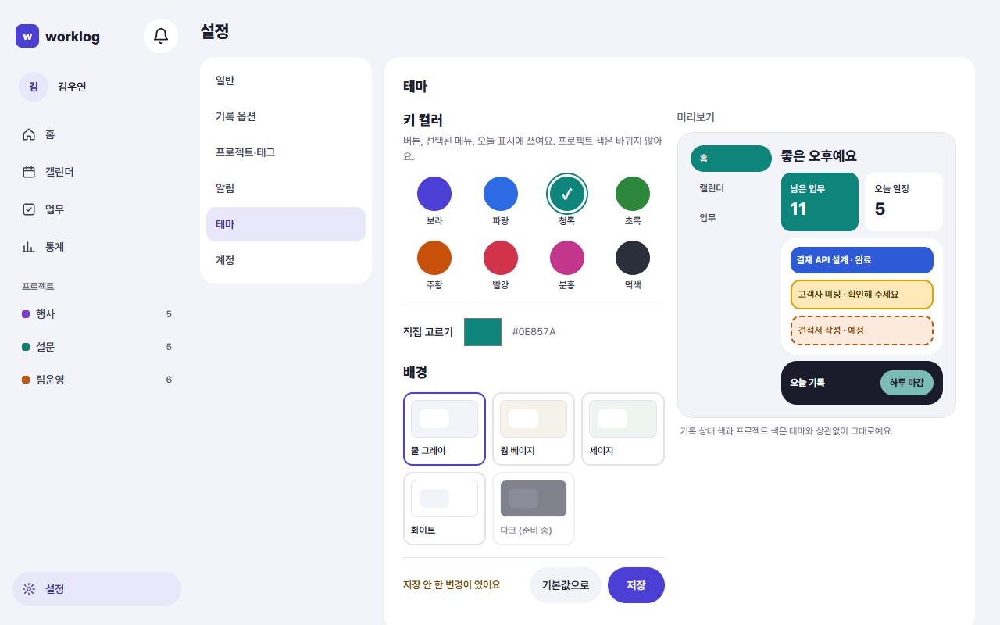
크게 보기, 원본 크기로 새 탭에서 열림 ↗- 키 컬러를 고르거나 직접 고르기로 원하는 색을 정해요. 기본 색이 8가지 있어요.
- 배경을 네 가지(쿨 그레이·웜 베이지·세이지·화이트) 중에서 골라요. 다크는 아직 준비 중이에요.
- 오른쪽(모바일은 아래)의 미리보기에서 홈 화면이 어떻게 보일지 확인해요. 고르는 동안은 저장 전이라 앱 전체는 그대로예요. 저장하지 않은 변경이 있으면 "저장 안 한 변경이 있어요"가 보여요.
- 저장을 누르면 "저장했어요. 앱 전체에 적용됐어요"가 나오고 바로 적용돼요. 기본값으로를 누르면 처음 색으로 돌아가요.
너무 옅은 색을 고르면 버튼이 잘 안 보인다고 알려 주고 더 진한 색을 권해 줘요.
계정
설정 › 계정 화면 위에는 가입한 이메일이 보이고, 그 아래에서 다음을 할 수 있어요.
- 이메일 인증: 가입할 때 인증을 마쳤으므로 인증됨이 보여요(1장).
- 비밀번호 변경: 현재 비밀번호, 새 비밀번호, 새 비밀번호 확인을 넣고 비밀번호 변경을 눌러요. 바꾸면 다른 기기에서 로그아웃돼요. 지금 쓰는 기기는 그대로예요. 현재 비밀번호를 여러 번 틀리면 잠시 바꿀 수 없어요.
- 로그아웃
- 개인정보 처리방침·이용약관: 읽어 볼 수 있어요.
- 회원 탈퇴: 되돌릴 수 없는 작업이라 로그아웃과 떨어진 맨 아래에 따로 있어요.
되돌리기
일정을 지우거나 업무를 완료하는 것처럼 바로 실행되는 동작은 화면 아래에 되돌리기 버튼이 있는 토스트가 5초 동안 떠요.
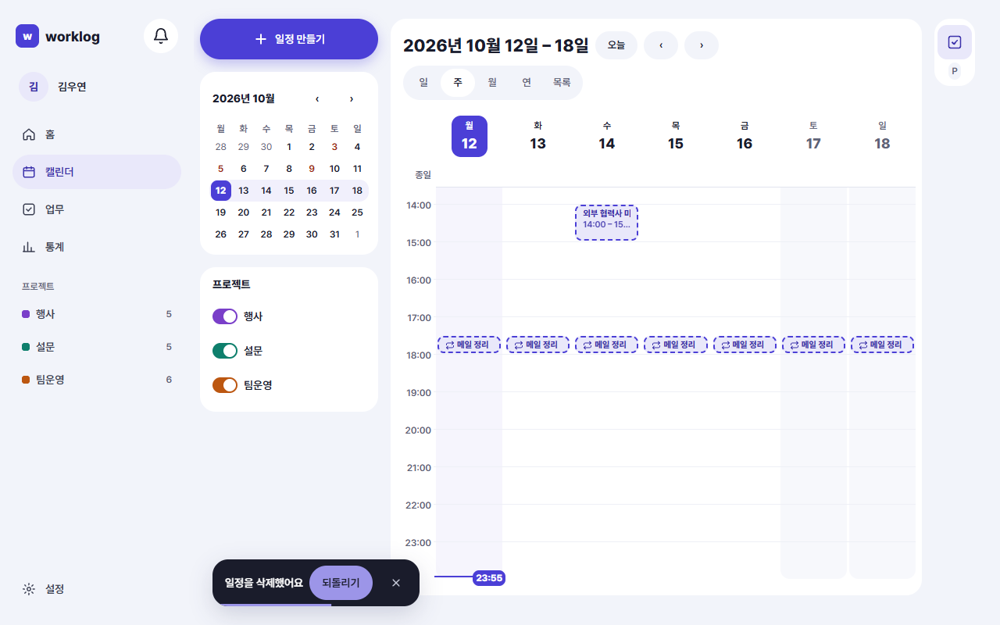
크게 보기, 원본 크기로 새 탭에서 열림 ↗- 5초 안에 되돌리기를 누르거나 Ctrl+Z(Mac은 ⌘Z)를 누르면 방금 한 동작이 취소돼요.
- 마우스를 토스트 위에 올리거나 토스트에 포커스가 있으면 사라지지 않고 기다려요.
- 같은 종류의 동작을 연달아 하면 하나로 모아 "일정 2개를 삭제했어요"처럼 알려 줘요. 되돌리면 나중에 한 동작부터 돌아와요.
- 글자를 입력하는 칸에서 Ctrl+Z는 글자 되돌리기예요. 칸이 비어 있으면 토스트 되돌리기로 넘어가요.
- 앱을 닫거나 탭을 숨기면 그 순간 동작이 확정돼서 되돌릴 수 없어요.
되돌릴 수 있는 동작의 예예요.
| 동작 | 토스트 문구 |
|---|---|
| 일정 삭제 | 일정을 삭제했어요 |
| 반복 일정 전체 옮기기 | 모든 일정을 옮겼어요 |
| 업무 완료 | 업무 n개를 완료했어요 |
| 확인 대기 처리 | n건을 했어요로 기록했어요 / n건을 안 했어요로 표시했어요 |
| 업무를 일정에 넣기 | 업무를 일정에 넣었어요 |
타이머를 멈춘 것은 되돌릴 수 없어요. 멈추기 전에 확인해 주세요(8장).
사용 설명서
이 설명서는 앱 안에서 언제든 새 탭으로 열 수 있어요.
- 컴퓨터: 사이드바 맨 아래 설정 바로 위의 사용 설명서
- 휴대폰: 더보기 메뉴 맨 아래의 사용 설명서
- 설정 › 계정 아래 약관·정책 묶음의 사용 설명서
- 명령 팔레트(Ctrl+K)에서
설명서·도움말을 찾아 사용 설명서 - 빠른 입력 문법 도움말 맨 아래 자세한 사용 설명서 (7장으로 바로 가요)
- 로그인 화면 아래 사용 설명서
10. 자주 묻는 질문
막혔을 때 여기서 찾아보세요. 자세한 설명은 괄호 안의 장에 있어요.
가입과 로그인
인증번호 메일이 안 와요. 스팸함을 먼저 봐요. 그래도 없으면 인증번호를 넣는 화면에서 새 코드 받기를 눌러요. 60초 간격으로 누를 수 있어요(1장).
인증번호를 5번 틀렸어요. 입력이 잠겨요. 새 코드 받기로 새 번호를 받아 넣어요. 인증번호는 10분 동안만 쓸 수 있어요(1장).
이메일 인증을 꼭 해야 하나요? 네. 가입 화면에서 메일로 받은 6자리를 넣어야 계정이 만들어져요(1장).
비밀번호를 여러 번 틀려서 로그인이 안 돼요. 10번 틀리면 15분 동안 로그인할 수 없어요. 남은 시간이 화면에 보여요. 비밀번호가 기억나지 않으면 비밀번호 찾기를 써요(1장).
가입한 이메일 주소를 바꿀 수 있나요? 지금은 바꾸는 화면이 없어요. 가입할 때 주소를 잘못 적었다면 인증번호를 넣는 단계에서 이메일 고치기로 고쳐요(1장).
업무
업무를 지웠는데 어디 갔나요? 업무는 지워지지 않고 보관돼요. 업무 목록 맨 아래 보관함 ›(휴대폰은 더보기 › 보관함)에서 복원해요. 완전히 지우려면 보관함에서 영구 삭제해요(되돌릴 수 없어요, 5장).
완료한 업무가 목록에서 사라졌어요. 업무 목록 맨 아래 "완료 n개 (최근 7일)"을 펼쳐요. 더 오래된 것은 상태 필터에서 '완료'를 켜요(5장).
보류한 업무가 안 보여요. 업무 목록은 처음에 할 일·진행 중만 보여 줘요. 상태 필터에서 '보류'를 켜요(5장).
프로젝트를 보관했더니 그 업무들이 안 보여요. 보관한 프로젝트의 업무는 목록에서 빠져요. 보관함의 프로젝트 탭에서 복원하거나, 프로젝트 필터로 골라 봐요(5장).
프로젝트를 지우면 그 업무도 지워지나요? 아니요. 보관함에서 프로젝트를 영구 삭제해도 업무는 남고 프로젝트 없음으로 옮겨져요(5장).
'할 일'을 만들고 싶어요. '할 일'은 업무의 상태 이름이에요. 업무를 만들면 상태가 '할 일'로 시작해요. 캘린더 오른쪽 할 일 상자도 아직 일정을 잡지 않은 업무를 모아 둔 패널이에요(3장).
일정과 캘린더
일정을 잡았는데 업무가 완료되지 않아요. 일정은 계획이라 업무 상태를 바꾸지 않아요. 업무가 끝나면 업무의 체크를 눌러 완료해요(3장, 6장).
반복 일정 하나만 바꾸고 싶어요. 옮기거나 고칠 때 묻는 창에서 이 일정만을 골라요(6장).
휴대폰에서 일정을 끌면 화면만 스크롤돼요. 약 0.5초 길게 누른 뒤에 움직여요(6장).
업무 패널이 안 보여요. 좁은 화면에서는 접혀 있어요. 오른쪽 가장자리의 업무 아이콘을 누르거나 P를 눌러요(6장).
특정 프로젝트 일정만 잠깐 가리고 싶어요. 캘린더 왼쪽의 프로젝트 이름을 누르면 그 프로젝트 일정이 숨겨지고, 다시 누르면 돌아와요(6장).
빠른 입력
시간을 적었는데 제목에 들어갔어요.
15:00까지처럼 시간 뒤에 글자가 붙으면 읽지 못해요. 입력창 아래 "시간으로 읽지 못했어요"가 보이면 15:00이나 14-15처럼 고쳐요(7장).
@프로젝트를 적었더니 새 프로젝트를 만들라고 해요.
그 이름의 프로젝트가 없거나, 프로젝트 이름에 공백이 있어서예요. 공백이 있는 프로젝트는 업무를 만든 뒤 업무 상세의 프로젝트 칸에서 골라요(7장).
날짜만 적었더니 일정이 안 생겨요.
시간 없이 날짜만 적으면 그 날짜가 업무의 마감일이 돼요. 일정까지 만들려면 내일 10-11처럼 시간을 함께 적어요(7장).
확인 대기와 기록
확인 대기가 안 떠요. 세 가지를 확인해요. 그 일정에 업무를 연결했나요? 일정이 끝났나요(진행 중인 일정은 끝난 뒤에 떠요)? 오늘을 포함한 최근 7일 안인가요? 더 지난 것은 캘린더 일 보기에서 그날을 열어 처리해요(3장, 4장).
일정을 고쳤더니 확인 대기가 사라졌어요. 일정을 지우거나 시각·반복을 바꾸면 그 일정에 이미 생긴 확인 대기는 지워져요(6장).
'했어요'를 눌렀는데 업무가 완료되지 않아요. '했어요'는 그 일정 한 번을 했다는 기록이에요. 업무가 다 끝났으면 업무를 따로 완료해요(3장).
실수로 '했어요'·'안 했어요'를 눌렀어요. 화면 아래 알림이 떠 있는 5초 안에 되돌리기나 Ctrl+Z를 눌러요. 5초가 지나면 되돌릴 수 없어요. 남은 기록은 캘린더 일 보기 이날의 기록에서 열어 고치거나 삭제할 수 있어요(9장, 6장).
하루 마감
하루 마감을 안 하면 어떻게 되나요? 기록은 그대로 남아요. 통계의 '마감한 날'에 세지 않고, 다음 근무일로 업무를 넘기지 않을 뿐이에요(4장).
어제 마감을 깜빡했어요. 캘린더 일 보기에서 어제를 열고 이날의 기록의 하루 마감을 눌러요(4장).
넘긴 계획은 어디서 보나요? 지금은 넘긴 계획을 다시 보거나 고치는 화면이 없어요. 하루 마감 2단계에서 넘길 업무를 골라 주세요. 넘겨도 업무의 상태와 마감일은 바뀌지 않아요(4장).
잘못 마감했어요. 마감 뒤 창의 마감 취소를 눌러요. 창을 닫았으면 하루 마감을 다시 열어 "이미 마감했어요" 창에서 마감 취소를 눌러요. 마감을 취소해도 넘긴 계획은 그대로예요(4장).
시간 기록(옵션)
타이머 정지를 잘못 눌렀어요. 타이머 정지는 되돌릴 수 없어요. 남은 기록을 열어 시간을 고쳐요. 1분이 안 돼서 멈췄으면 기록이 남지 않으니 다시 시작해요. 실수로 정지한 타이머를 이어서 돌리는 기능은 아직 없어요(8장).
타이머를 켜 둔 채 퇴근했어요. 24시간까지만 기록돼요. 알림의 시간 고치기로 실제 시간을 넣어요(8장).
시간 기록을 껐더니 시간이 사라졌어요. 화면에서만 숨겨져요. 다시 켜면 그대로 보여요(8장).
빈 시간 버튼이 안 보여요. 업무 시간대(설정 › 일반) 안의 15분 이상 빈 구간만 보여요. 오늘이면 지금 이후는 빈 시간으로 치지 않아요(8장).
알림과 설정
하루 마감 알림이 안 와요. 설정 › 알림에서 하루 마감 알림을 켰는지 봐요. 앱을 닫아도 받으려면 허용하기로 브라우저 푸시를 허용해야 해요. 허용하지 않아도 알림은 앱 안 알림 센터에 모여요(9장).
iPhone에서 푸시 알림이 안 와요. Safari에서 홈 화면에 추가한 앱으로 열어야 푸시를 받을 수 있어요(1장, 9장).
하루 마감 시각을 바꾸고 싶어요. 설정 › 일반의 하루 마감 시각에서 바꿔요. 홈의 띠와 알림이 모두 이 시각을 따라요(9장).
실수로 일정을 지웠어요. 5초 안에 되돌리기나 Ctrl+Z(Mac은 ⌘Z)를 눌러요(9장).
테마를 바꿨는데 그대로예요. 저장을 눌렀는지 확인해요. 저장 전에는 미리보기에만 보여요(9장).